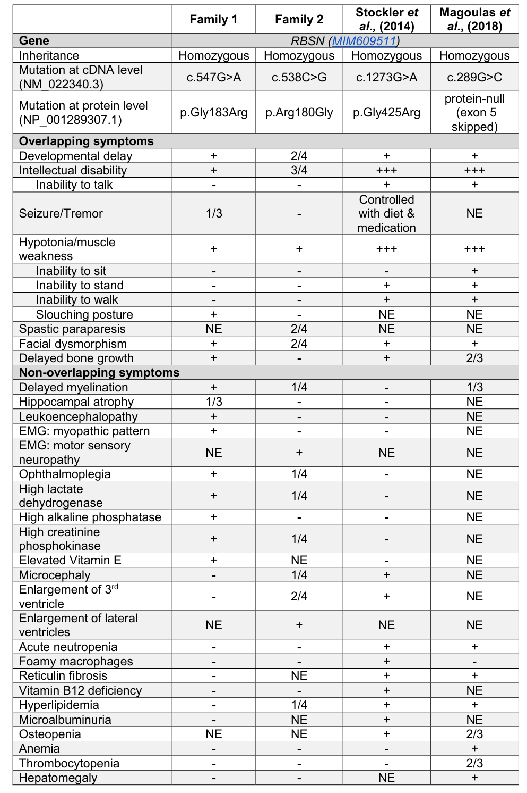

A syndromic congenital myelofibrosis caused by germline RBSN variants. RBSN encodes rabenosyn-5, a Rab5 effector that is recruited to early endosomes through a FYVE finger domain and is complexed there with the Sec1-like protein hVPS45; because hVPS45 does not bind Rab5 itself, rabenosyn-5 is the molecular link between the two. The clinical picture combines hematologic abnormalities apparent in infancy - neutropenia, anemia and variable thrombocytopenia with myelofibrosis on marrow biopsy - with severe neurodevelopmental delay, delayed bone age, ocular abnormalities and dysmorphic facial features. Hematopoietic transplantation can restore the hematologic abnormalities. The interesting thing about this entry is not the gene but the company it keeps. Congenital myelofibrosis is a tiny disease class, and two of the three genes it is attributed to - VPS45 and RBSN - encode binding partners in the same early-endosomal module. In VPS45 deficiency, rabenosyn-5 protein itself falls; so the VPS45 disease is in part a rabenosyn-5-deficient state, and it presents with neutropenia and bone marrow fibrosis. That convergence is the best account this entry can assemble, because the defining report for the RBSN disease carries no retrievable text of its own - see the sourcing note below. What is missing from that account is the fibrosis step itself, and the partner disease's own reviewers say so: the mechanism by which VPS45 deficiency produces marrow fibrosis is stated to be unknown, with transforming growth factor beta released from apoptotic neutrophils and abnormal megakaryocytes offered only as a candidate. The entry therefore carries the chain from the gene to failed receptor recycling as established mechanism, and the step from there to marrow fibrosis as an open question.
Ask a research question about Congenital Myelofibrosis with Anemia, Neutropenia, Developmental Delay, and Ocular Abnormalities. OpenScientist will conduct autonomous deep research using the Disorder Mechanisms Knowledge Base and PubMed literature (typically 10-30 minutes).
Do not include personal health information in your question. Questions and results are cached in your browser's local storage.
name: Congenital Myelofibrosis with Anemia, Neutropenia, Developmental Delay, and Ocular Abnormalities
creation_date: "2026-09-19T00:00:00Z"
category: Mendelian
synonyms:
- MFANDO
- "Myelofibrosis, congenital, with anemia, neutropenia, developmental delay, and ocular abnormalities"
- Syndromic congenital myelofibrosis
- RBSN-related congenital myelofibrosis
description: >
A syndromic congenital myelofibrosis caused by germline RBSN variants. RBSN encodes
rabenosyn-5, a Rab5 effector that is recruited to early endosomes through a FYVE finger
domain and is complexed there with the Sec1-like protein hVPS45; because hVPS45 does not
bind Rab5 itself, rabenosyn-5 is the molecular link between the two. The clinical picture
combines hematologic abnormalities apparent in infancy - neutropenia, anemia and variable
thrombocytopenia with myelofibrosis on marrow biopsy - with severe neurodevelopmental
delay, delayed bone age, ocular abnormalities and dysmorphic facial features.
Hematopoietic transplantation can restore the hematologic abnormalities.
The interesting thing about this entry is not the gene but the company it keeps. Congenital
myelofibrosis is a tiny disease class, and two of the three genes it is attributed to -
VPS45 and RBSN - encode binding partners in the same early-endosomal module. In VPS45
deficiency, rabenosyn-5 protein itself falls; so the VPS45 disease is in part a
rabenosyn-5-deficient state, and it presents with neutropenia and bone marrow fibrosis.
That convergence is the best account this entry can assemble, because the defining report
for the RBSN disease carries no retrievable text of its own - see the sourcing note below.
What is missing from that account is the fibrosis step itself, and the partner disease's
own reviewers say so: the mechanism by which VPS45 deficiency produces marrow fibrosis is
stated to be unknown, with transforming growth factor beta released from apoptotic
neutrophils and abnormal megakaryocytes offered only as a candidate. The entry therefore
carries the chain from the gene to failed receptor recycling as established mechanism, and
the step from there to marrow fibrosis as an open question.
disease_term:
preferred_term: "myelofibrosis, congenital, with anemia, neutropenia, developmental delay, and ocular abnormalities"
term:
id: MONDO:0975797
label: "myelofibrosis, congenital, with anemia, neutropenia, developmental delay, and ocular abnormalities"
parents:
- Inherited bone marrow failure syndrome
- Endosomal trafficking disorder
mappings:
mondo_mappings:
- term:
id: MONDO:0975797
label: "myelofibrosis, congenital, with anemia, neutropenia, developmental delay, and ocular abnormalities"
mapping_predicate: skos:exactMatch
mapping_source: MONDO
mapping_justification: >-
The entry's own disease_term, recorded explicitly so the exact-match relationship is
queryable rather than implied by the binding alone.
references:
- reference: PMID:29784638
title: "Syndromic congenital myelofibrosis associated with a loss-of-function variant in RBSN."
- reference: url:https://www.ncbi.nlm.nih.gov/medgen/1874910/
title: "Myelofibrosis, congenital, with anemia, neutropenia, developmental delay, and ocular abnormalities (Concept Id: C5975380) - MedGen - NCBI"
- reference: PMID:35605178
title: "Inherited bone marrow failure in the pediatric patient."
- reference: PMID:38481905
title: "A Rare MPIG6B Gene Mutation in a Saudi Adolescent Male With Thrombocytopenia, Anemia, and Myelofibrosis: A Case Report."
- reference: PMID:41838173
title: "MPIG6B-related thrombocytopenia and myelofibrosis: A case report."
- reference: PMID:11062261
title: "Rabenosyn-5, a novel Rab5 effector, is complexed with hVPS45 and recruited to endosomes through a FYVE finger domain."
- reference: PMID:22308388
title: "Rabenosyn-5 defines the fate of the transferrin receptor following clathrin-mediated endocytosis."
- reference: PMID:19931244
title: "Common and distinct roles for the binding partners Rabenosyn-5 and Vps45 in the regulation of endocytic trafficking in mammalian cells."
- reference: PMID:23738510
title: "A congenital neutrophil defect syndrome associated with mutations in VPS45."
- reference: PMID:30294941
title: "How we approach: Severe congenital neutropenia and myelofibrosis due to mutations in VPS45."
- reference: PMID:34068038
title: "Craniofacial Diseases Caused by Defects in Intracellular Trafficking."
- reference: PMID:33512427
title: "Mammalian VPS45 orchestrates trafficking through the endosomal system."
- reference: PMID:25233840
title: "Single point mutation in Rabenosyn-5 in a female with intractable seizures and evidence of defective endocytotic trafficking."
- reference: PMID:35652444
title: "RABENOSYN separation-of-function mutations uncouple endosomal recycling from lysosomal degradation, causing a distinct Mendelian disorder."
notes: >-
Sourcing limit, stated up front because it shapes every evidence block below. The defining
report for this disease (PMID:29784638, a Letter to Blood) has no abstract in PubMed and Blood
does not release its full text for programmatic retrieval - the PMC record (PMC6085991)
carries the note that the publisher does not allow downloading of the full text in XML form,
and Europe PMC returns no abstract text for it either. There is therefore no quotable sentence
from it, and it is cited in `references:` without an evidence block rather than being quoted
by its title. The disease-level phenotype claims are instead evidenced from the NCBI MedGen
record for this concept (C5975380), whose definition is OMIM's summary of that Letter; the
page is cached under `url:` like any other reference and the quoted sentences are exact
substrings of it.
Entity identity. RBSN is associated with more than one Mendelian phenotype and this entry is
only one of them. ClinVar keys `NM_022340.4(RBSN):c.289G>C (p.Gly97Arg)` (VCV003340062, OMIM
allelic variant 609511.0002) to exactly this condition, cross-referenced to MedGen:C5975380,
MONDO:0975797 and OMIM:620939; it keys `c.538C>G (p.Arg180Gly)` and `c.547G>A (p.Gly183Arg)` -
the two FYVE-domain alleles of PMID:35652444 - to a separately named disorder, Kariminejad
neurodevelopmental syndrome (MONDO:0975795), which is not curated here; the same change that
adds this entry adds a stub for it, so the split is recorded in the curation queue rather than
only here. That paper's own conclusion is that distinct germline RBSN mutations cause
non-overlapping phenotypes. A third RBSN patient (PMID:25233840, homozygous p.Gly425Arg) overlaps
this entry clinically - developmental delay, non-verbal, unable to walk, dysmorphism, delayed
bone age, transient neutropenia and a mild increase in marrow reticulin fibrosis - but is not
assigned to either named disorder in ClinVar and is not counted as a case of this disease
here. See the `rbsn_allelic_series_nosology` discussion; the ClinVar records were read through
the NCBI E-utilities esummary API on 2026-09-19.
Module conformance was considered and deliberately not declared. `fibrotic_response` is the
obvious candidate for the marrow-fibrosis node, but its chain runs tissue injury ->
inflammatory recruitment -> mesenchymal cell activation -> excessive ECM deposition, and none
of those intermediate steps has been shown in this disease or in its VPS45 counterpart - the
fibrogenic cell is not identified in either. Declaring conformance would assert a cascade no
source supports. `myelosuppression` does not apply at all: it is a treatment-toxicity module
whose trigger node is a cytotoxic insult to proliferating progenitors, not a germline
trafficking defect.
Deep research. The falcon run for this entry is committed under `research/` with the
entry's own stem and the `-deep-research-falcon.md` suffix, together with its citations
sidecar and artifacts. `just preflight-dr` returns WARN on one point and the
point is benign: the report cites OMIM 609511, which is the RBSN *gene* MIM, where
MONDO:0975797 xrefs the *phenotype* MIM 620939. RBSN is the report's top gene at 50
mentions, so the entity is right. Its own term validation flags one mislabelled CURIE,
which is the report echoing the template placeholder "if available" as the label of
MONDO:0975797 rather than a real naming error.
The report independently reached three of this entry's judgement calls: that inheritance
is biallelic autosomal recessive, that the route from the endosomal lesion to marrow
fibrosis, cytopenias, ocular maldevelopment and neurologic injury "remains inferred", and
that the other RBSN alleles must not be merged into this concept. It closed a real gap by
naming the specific ocular lesions, which are now curated. What it could not do is give
this entry a citable route to its most interesting content: the per-sibling phenotype
frequencies, the cohort size, the zygosity, and the finding that c.289G>C acts by exon
skipping rather than as the missense its protein-level name implies all come from the full
text of PMID:35652444, which is not open access, is absent from PMC and Europe PMC, and is
cached here as abstract only. Those claims are therefore recorded in the
`paul2022_full_text_gated_content` discussion as work to do, not written into this entry as
fact.
No GeneReviews chapter covers this disorder. `just check-genereviews` returns NO_CHAPTER for
both Bookshelf collections, checked offline against the committed Bookshelf index
(`cache/bookshelf/`, snapshot 2026-09-10); no title among its 958 GeneReviews records contains
"myelofibrosis", "RBSN" or "rabenosyn". The phenotype baseline is therefore the OMIM/MedGen
clinical synopsis derived from the defining Letter.
prevalence:
- population: Worldwide
measure_type: CASES_IN_LITERATURE
prevalence_class: UNKNOWN
notes: >-
No rate has been estimated for this disease specifically. The containing class is itself
tiny: congenital myelofibrosis as a whole is reported at fewer than 100 cases worldwide
across all its causal genes, of which RBSN is one of three named.
evidence:
- reference: PMID:41838173
reference_title: "MPIG6B-related thrombocytopenia and myelofibrosis: A case report."
supports: SUPPORT
evidence_source: HUMAN_CLINICAL
quote_role: BACKGROUND
directness: INDIRECT
snippet: >-
Congenital myelofibrosis (cMF) is an extremely rare inherited bone marrow failure
disorder, with fewer than 100 cases reported worldwide
explanation: >-
Bounds the whole congenital-myelofibrosis class, which is the only quantitative frame
available. Graded INDIRECT because it counts every cause of cMF, not RBSN cases.
clinical_burden:
burden_level: HIGH
rationale: >-
Hematologic disease is apparent in infancy and is multilineage - neutropenia, anemia and
variable thrombocytopenia over a fibrotic marrow. On top of that sits severe
neurodevelopmental delay with absent speech and inability to walk, which is lifelong and
is not addressed by any treatment directed at the marrow. The only intervention reported
to change the hematologic course is hematopoietic transplantation. In the partner
disease - the closest comparator with published outcomes - transplanting into a fibrotic
marrow niche is itself described as a challenge, and eight of the sixteen reported
patients died before, during or after transplantation.
evidence:
- reference: url:https://www.ncbi.nlm.nih.gov/medgen/1874910/
reference_title: "Myelofibrosis, congenital, with anemia, neutropenia, developmental delay, and ocular abnormalities (Concept Id: C5975380) - MedGen - NCBI"
supports: SUPPORT
evidence_source: OTHER
quote_role: REVIEW_SYNTHESIS
snippet: >-
Additional features include severe neurodevelopmental delay with absent speech and
inability to walk, delayed bone age, ocular abnormalities, and dysmorphic facial
features.
explanation: >-
Gives the neurodevelopmental severity that makes the burden high independently of the
marrow disease.
- reference: PMID:30294941
reference_title: "How we approach: Severe congenital neutropenia and myelofibrosis due to mutations in VPS45."
supports: SUPPORT
evidence_source: HUMAN_CLINICAL
directness: INDIRECT
snippet: >-
VPS45 defect carries an exceptionally poor prognosis with eight of the 16 reported
patients dying before, during, or after hematopoietic stem cell transplantation.
explanation: >-
The transplant outcome figures quoted in the rationale. Graded INDIRECT: they are the
partner disease's outcomes, cited because no outcome series exists for the RBSN
disease, not as a claim about it.
inheritance:
- name: Autosomal recessive inheritance
inheritance_term:
preferred_term: Autosomal recessive inheritance
term:
id: HP:0000007
label: Autosomal recessive inheritance
description: >
Recorded as autosomal recessive on the strength of the disease class rather than of a
published segregation analysis for this gene. Congenital myelofibrosis presents in
childhood, clusters in consanguineous families, and is attributed to germline variants in
MPL, VPS45 and RBSN; the VPS45 counterpart is explicitly biallelic. The PubMed record for
the defining RBSN Letter is indexed with the MeSH terms Consanguinity and Pedigree, which
is consistent but is indexing metadata rather than a reported finding, so it is not cited
as evidence here. No published quote states the zygosity of the RBSN allele in the index
patient; ClinVar records one pathogenic germline variant for this condition without a
mode-of-inheritance assertion.
evidence:
- reference: PMID:41838173
reference_title: "MPIG6B-related thrombocytopenia and myelofibrosis: A case report."
supports: SUPPORT
evidence_source: HUMAN_CLINICAL
quote_role: BACKGROUND
directness: INDIRECT
snippet: >-
It predominantly affects children and adolescents and is frequently observed in
consanguineous families, suggesting an autosomal recessive pattern of inheritance.
explanation: >-
States the recessive pattern for congenital myelofibrosis as a class. Graded INDIRECT
because it is an inference about the class, not a segregation result in an RBSN family.
- reference: PMID:23738510
reference_title: "A congenital neutrophil defect syndrome associated with mutations in VPS45."
supports: SUPPORT
evidence_source: HUMAN_CLINICAL
directness: INDIRECT
snippet: >-
Defective endosomal intracellular protein trafficking due to biallelic mutations in
VPS45 underlies a new immunodeficiency syndrome involving impaired neutrophil function.
explanation: >-
Establishes biallelic inheritance for the partner gene whose disease shares the
neutropenia-plus-marrow-fibrosis presentation. Graded INDIRECT: a different gene.
genetic:
- name: RBSN
gene_term:
preferred_term: RBSN
term:
id: hgnc:20759
label: RBSN
relationship_type: CAUSATIVE
notes: >
RBSN, formerly ZFYVE20, encodes rabenosyn-5. Both the cached MedGen record for this
concept and the ClinVar record for the associated variant give the gene location as
3p25.1 (ClinVar VCV003340062, GRCh38 chr3:15090399); both were read through NCBI on
2026-09-19. The gene CURIE binds to what `runoak -i sqlite:obo:hgnc info hgnc:20759`
returns, which is RBSN. ZFYVE20 is the previous symbol rather than a current alias: the
live HGNC record for HGNC:20759 gives symbol RBSN, prev_symbol ZFYVE20 and location
3p25.1 (fetched from the HGNC REST API on 2026-09-19). That is why the older literature
cited in this entry writes ZFYVE20 for the same gene.
The disease-associated allele is recorded in ClinVar as NM_022340.4(RBSN):c.289G>C
(p.Gly97Arg), classified Pathogenic for this condition with no assertion criteria
provided, and cross-referenced to OMIM allelic variant 609511.0002. The defining Letter
characterises the change as loss of function in its own title. Neither ClinVar nor the
MedGen record states the zygosity in the index patient, and the Letter is not quotable,
so no zygosity is asserted anywhere in this entry.
evidence:
- reference: PMID:35605178
reference_title: "Inherited bone marrow failure in the pediatric patient."
supports: SUPPORT
evidence_source: HUMAN_CLINICAL
quote_role: REVIEW_SYNTHESIS
snippet: >-
Some of the genes and associated syndromes in this category are WAS (Wiskott-Aldrich
syndrome protein), SBDS (Shwachman-Bodian-Diamond syndrome), G6PC (glycogen storage
disease), CXCR4 (WHIM syndrome), TAZ (Barth syndrome), RBSN (syndromic myelofibrosis
and neutropenia), and SMARCD2.
explanation: >-
A hematology review naming RBSN as the gene of a syndromic disorder of myelofibrosis
with neutropenia, which is this entry's disease.
- reference: PMID:38481905
reference_title: "A Rare MPIG6B Gene Mutation in a Saudi Adolescent Male With Thrombocytopenia, Anemia, and Myelofibrosis: A Case Report."
supports: SUPPORT
evidence_source: HUMAN_CLINICAL
quote_role: BACKGROUND
snippet: >-
The occurrence of primary myelofibrosis in children has been linked to mutations in
MPL, VPS45, and RBSN
explanation: >-
Independent restatement that RBSN is one of the three genes childhood myelofibrosis is
attributed to. Quoted from another disease's case report, where it is background.
- reference: PMID:41838173
reference_title: "MPIG6B-related thrombocytopenia and myelofibrosis: A case report."
supports: SUPPORT
evidence_source: HUMAN_CLINICAL
quote_role: BACKGROUND
snippet: >-
cMF is primarily associated with germline mutations in genes such as MPL, VPS45, and
RBSN
explanation: >-
Establishes that the RBSN association is germline rather than somatic, which is the
contrast this sentence is drawing against adult primary myelofibrosis.
- reference: PMID:35652444
reference_title: "RABENOSYN separation-of-function mutations uncouple endosomal recycling from lysosomal degradation, causing a distinct Mendelian disorder."
supports: SUPPORT
evidence_source: HUMAN_CLINICAL
snippet: >-
We conclude that distinct germline mutations in RBSN cause non-overlapping phenotypes
with specific and discrete endolysosomal cellular defects.
explanation: >-
The allelic-series statement this entry's scope rests on: RBSN carries more than one
Mendelian disorder, so a second RBSN phenotype is not automatically this disease.
pathophysiology:
- name: RBSN Loss of Function
description: >
A germline RBSN variant removes normal rabenosyn-5 function. Rabenosyn-5 is a Rab5
effector that reaches early endosomes through a FYVE finger domain binding
phosphatidylinositol 3-phosphate, and it is the component that brings the Sec1-like
protein hVPS45 to that membrane, since hVPS45 does not bind Rab5 itself. Loss of function
is the defining report's own characterisation of the allele, stated in its title; the
Letter carries no quotable text, so this node is evidenced from the rabenosyn-5 cell
biology rather than from patient material.
biological_scale: MOLECULAR
mechanism_confidence: ESTABLISHED
genetic_context:
variant_origin: GERMLINE
functional_impact_category: LOSS_OF_FUNCTION
genes:
- preferred_term: RBSN
term:
id: hgnc:20759
label: RBSN
molecular_functions:
- preferred_term: phosphatidylinositol-3-phosphate binding
modifier: DECREASED
term:
id: GO:0032266
label: phosphatidylinositol-3-phosphate binding
- preferred_term: Rab5 binding
modifier: DECREASED
term:
id: GO:0031267
label: small GTPase binding
cellular_components:
- preferred_term: early endosome
term:
id: GO:0005769
label: early endosome
notes: >-
Binding provenance for the two molecular functions, recorded because both look
over-broad and both were checked. `GO:0017137` Rab GTPase binding is the obvious
candidate for the Rab5 descriptor and is **obsolete**: OLS returns it with
`is_obsolete: true` and `term replaced by: GO_0031267`, so GO has merged Rab GTPase
binding into `GO:0031267` small GTPase binding, which is what this node binds. Binding
the obsolete CURIE was tried and `just validate-terms` rejects it - ERROR, not in the
`MolecularFunctionTerm` dynamic enum, plus a label-mismatch WARN reporting the canonical
label as `GO_0017137`. `runoak -i sqlite:obo:go info GO:0017137` likewise returns no
label. The Rab5 specificity therefore lives in `preferred_term`, which is what the
ontology-term contract prescribes when no narrower term exists.
The same check was run for the fusion descriptor on the next node: `GO:0099022` vesicle
tethering is obsolete (`runoak -i sqlite:obo:go search "l^vesicle tethering"` returns it
as `obsolete vesicle tethering`), so that node binds `GO:0006906` vesicle fusion, the
process the cited paper actually measures.
downstream:
- target: Loss of Rabenosyn-5-VPS45 Coupling at the Early Endosome
causal_link_type: DIRECT
description: >-
Rabenosyn-5 is the physical link between Rab5 and hVPS45, so losing it uncouples the
two.
evidence:
- reference: PMID:11062261
reference_title: "Rabenosyn-5, a novel Rab5 effector, is complexed with hVPS45 and recruited to endosomes through a FYVE finger domain."
supports: SUPPORT
evidence_source: IN_VITRO
snippet: >-
Rabenosyn-5 is complexed to the Sec1-like protein hVPS45. hVPS45 does not interact
directly with Rab5, therefore Rabenosyn-5 serves as a molecular link between hVPS45
and the Rab5 GTPase.
explanation: >-
Establishes that the Rab5-to-hVPS45 connection runs through rabenosyn-5, which is
exactly what this edge asserts is lost.
evidence:
- reference: PMID:11062261
reference_title: "Rabenosyn-5, a novel Rab5 effector, is complexed with hVPS45 and recruited to endosomes through a FYVE finger domain."
supports: SUPPORT
evidence_source: IN_VITRO
snippet: >-
This complex includes a novel protein, Rabenosyn-5, which, like the previously
characterized Rab5 effector early endosome antigen 1 (EEA1), contains an FYVE finger
domain and is recruited in a phosphatidylinositol-3-kinase-dependent fashion to early
endosomes.
explanation: >-
Identifies the two molecular functions bound on this node - PI3P binding through the
FYVE finger, and Rab5 effector binding - and the compartment they act in.
- reference: PMID:35652444
reference_title: "RABENOSYN separation-of-function mutations uncouple endosomal recycling from lysosomal degradation, causing a distinct Mendelian disorder."
supports: SUPPORT
evidence_source: IN_VITRO
directness: INDIRECT
snippet: >-
We find that these variants abrogate binding to its cognate substrate
phosphatidylinositol 3-phosphate (PI3P) and thus prevent its translocation to early
endosomes.
explanation: >-
Shows in patient cells that disrupting the FYVE domain stops rabenosyn-5 reaching the
early endosome. Graded INDIRECT: those are the alleles of a different RBSN disorder, so
this supports the general consequence of losing the domain, not this allele's effect.
- name: Loss of Rabenosyn-5-VPS45 Coupling at the Early Endosome
description: >
Without rabenosyn-5 at the early-endosomal membrane, the tethering and SNARE-binding
module it forms with hVPS45 - a Sec1/Munc18-family protein - is not assembled there. The
dependency runs in both directions: in patients who lack VPS45, rabenosyn-5 protein
itself is reduced, and depleting either partner produces the same recycling failure.
That reciprocity is what makes the VPS45 disease the closest available model for this
one.
biological_scale: MOLECULAR
mechanism_confidence: ESTABLISHED
biological_processes:
- preferred_term: protein localization to early endosome
modifier: DECREASED
term:
id: GO:1902946
label: protein localization to early endosome
- preferred_term: early endosomal fusion
modifier: DECREASED
term:
id: GO:0006906
label: vesicle fusion
downstream:
- target: Impaired Endosomal Receptor Recycling and Cargo Sorting
causal_link_type: DIRECT
description: >-
Depleting either partner of this module impairs recycling of the same cargo.
evidence:
- reference: PMID:19931244
reference_title: "Common and distinct roles for the binding partners Rabenosyn-5 and Vps45 in the regulation of endocytic trafficking in mammalian cells."
supports: SUPPORT
evidence_source: IN_VITRO
snippet: >-
similar to Rabenosyn-5-depletion, hVps45-depletion causes impaired recycling of beta1
integrins, and a subsequent delay in human fibroblast cell migration on
fibronectin-coated plates
explanation: >-
Shows the two partners are interchangeable for this outcome, which is the step from
losing the module to losing recycling.
evidence:
- reference: PMID:23738510
reference_title: "A congenital neutrophil defect syndrome associated with mutations in VPS45."
supports: SUPPORT
evidence_source: IN_VITRO
snippet: >-
The level of VPS45 protein was reduced, as were the VPS45 binding partners rabenosyn-5
and syntaxin-16.
explanation: >-
Documents that the two proteins are mutually stabilising in patient material, which is
why a lesion in either one removes the module.
- reference: PMID:11062261
reference_title: "Rabenosyn-5, a novel Rab5 effector, is complexed with hVPS45 and recruited to endosomes through a FYVE finger domain."
supports: SUPPORT
evidence_source: IN_VITRO
snippet: >-
although both EEA1 and Rabenosyn-5 are required for early endosomal fusion, only
overexpression of Rabenosyn-5 inhibits cathepsin D processing, suggesting that the two
proteins play distinct roles in endosomal trafficking
explanation: >-
Supports the fusion process bound on this node, and records that rabenosyn-5's role is
not redundant with the other FYVE-domain Rab5 effector at the same membrane.
- name: Impaired Endosomal Receptor Recycling and Cargo Sorting
description: >
The cellular consequence, and the step that is best evidenced in this disease's biology.
Rabenosyn-5 determines what happens to receptors after clathrin-mediated internalisation:
depleting it sends transferrin receptors to lysosomal degradation instead of back to the
surface, and it impairs recycling of beta1 integrin. Because rabenosyn-5 sets the
recycling rate of many receptors rather than one, the consequences are not confined to a
single ligand - nutrient uptake, growth-factor and neurotransmitter signalling, and
integrin-dependent motility all depend on it.
biological_scale: CELLULAR
mechanism_confidence: ESTABLISHED
biological_processes:
- preferred_term: endocytic recycling
modifier: DECREASED
term:
id: GO:0032456
label: endocytic recycling
- preferred_term: receptor-mediated endocytosis
modifier: DECREASED
term:
id: GO:0006898
label: receptor-mediated endocytosis
downstream:
- target: Failure of Myeloid Differentiation and Neutrophil Output
causal_link_type: INDIRECT_KNOWN_INTERMEDIATES
description: >-
Mistrafficking of a hematopoietic growth-factor receptor is the proposed route. It has
been shown for the granulocyte colony-stimulating factor receptor in cells lacking the
partner protein VPS45, not in RBSN-deficient cells.
evidence:
- reference: PMID:33512427
reference_title: "Mammalian VPS45 orchestrates trafficking through the endosomal system."
supports: SUPPORT
evidence_source: IN_VITRO
directness: INDIRECT
snippet: >-
Loss of VPS45 causes defective Rab5-to-Rab7 conversion resulting in trapping of
cargos in early endosomes and impaired delivery to lysosomes. In this context, we
demonstrate aberrant trafficking of the granulocyte colony-stimulating factor
receptor in the absence of VPS45.
explanation: >-
Names a specific receptor whose mistrafficking would explain a neutrophil deficit.
Graded INDIRECT: shown for the partner gene, and the equivalent experiment has not
been done in RBSN-deficient cells.
- target: Bone Marrow Reticulin Fibrosis
causal_link_type: INDIRECT_UNKNOWN_INTERMEDIATES
description: >-
This is the weakest link in the chain and is recorded as such. Reviewers of the
partner disease state that the mechanism connecting the endosomal lesion to reticulin
deposition is not known, and nothing fills that step for RBSN either. What supports
the edge is that the two diseases caused by lesions in this module both produce marrow
fibrosis, and that the same inference was drawn prospectively in 2014, four years
before the RBSN marrow phenotype was reported.
evidence:
- reference: PMID:25233840
reference_title: "Single point mutation in Rabenosyn-5 in a female with intractable seizures and evidence of defective endocytotic trafficking."
supports: SUPPORT
evidence_source: HUMAN_CLINICAL
directness: INDIRECT
snippet: >-
There is also a possible relation between the observed bone marrow changes and Rbsn-5
deficiency. Missense mutations leading to depletion of Vps45, a known Rbsn-5 binding
partner, have recently been reported in patients with severe neutropenia, bone marrow
fibrosis and early lethality
explanation: >-
The authors' own hedged inference from the partner gene's disease to a marrow effect
of rabenosyn-5 deficiency. Quoted as the reasoning it is; graded INDIRECT because it
is an argument by analogy in a patient carrying a different RBSN allele.
- target: Disrupted Receptor Signalling in the Developing Nervous System
causal_link_type: INDIRECT_UNKNOWN_INTERMEDIATES
description: >-
Proposed, not shown. Rabenosyn-5 sets the recycling rate of growth-factor and
neurotransmitter receptors, which is a route by which a recycling defect could impair
neurodevelopment; this curation found no experiment tracing it in this disease.
evidence:
- reference: PMID:22308388
reference_title: "Rabenosyn-5 defines the fate of the transferrin receptor following clathrin-mediated endocytosis."
supports: SUPPORT
evidence_source: IN_VITRO
snippet: >-
Depletion of Rabenosyn-5, but not of other early endosomal proteins such as early
endosome antigen 1, resulted in impaired transferrin uptake and lysosomal degradation
of transferrin receptors.
explanation: >-
Shows the specific sorting failure - recycling diverted to degradation - and that it is
rabenosyn-5-specific rather than a general consequence of perturbing early endosomes.
- reference: PMID:25233840
reference_title: "Single point mutation in Rabenosyn-5 in a female with intractable seizures and evidence of defective endocytotic trafficking."
supports: SUPPORT
evidence_source: IN_VITRO
directness: INDIRECT
snippet: >-
Studies in fibroblasts revealed expression and localization of Rbsn-5G425R in wild-type
manner, but a 50% decrease in transferrin accumulation, which is corrected by wild-type
allele transfection.
explanation: >-
Demonstrates the recycling defect in cells from a patient carrying a pathogenic RBSN
missense allele, with rescue. Graded INDIRECT: that allele belongs to a different RBSN
phenotype, so it supports the gene-level consequence rather than this disease's allele.
- name: Failure of Myeloid Differentiation and Neutrophil Output
description: >
Neutropenia is one of the three hematologic findings in the disease's name, and the one
with a candidate molecular route. In VPS45 deficiency - where rabenosyn-5 protein
is itself reduced - seven children presented with neutropenia and neutrophil dysfunction,
and the granulocyte colony-stimulating factor receptor is mistrafficked in VPS45-null
cells. This curation found no equivalent experiment in RBSN-deficient cells, so the node
is provisional. One practical consequence carries over from the partner disease and is
worth recording: its neutropenia does not respond to G-CSF, which is why no
growth-factor treatment is listed in this entry.
biological_scale: CELLULAR
mechanism_confidence: PROVISIONAL
cell_types:
- preferred_term: neutrophil
term:
id: CL:0000775
label: neutrophil
- preferred_term: hematopoietic stem cell
term:
id: CL:0000037
label: hematopoietic stem cell
biological_processes:
- preferred_term: granulocyte differentiation
modifier: DECREASED
term:
id: GO:0030851
label: granulocyte differentiation
downstream:
- target: Decreased total neutrophil count
causal_link_type: DIRECT
- target: Marrow Failure with Multilineage Cytopenia
causal_link_type: DIRECT
description: >-
The myeloid deficit is one lineage of a multilineage failure.
evidence:
- reference: PMID:23738510
reference_title: "A congenital neutrophil defect syndrome associated with mutations in VPS45."
supports: SUPPORT
evidence_source: HUMAN_CLINICAL
directness: INDIRECT
snippet: >-
We clinically evaluated seven children from five families who had neutropenia,
neutrophil dysfunction, bone marrow fibrosis, and nephromegaly.
explanation: >-
Shows that losing this endosomal module in humans produces neutropenia together with
marrow fibrosis - the same pairing as here. Graded INDIRECT: a different gene.
- reference: PMID:30294941
reference_title: "How we approach: Severe congenital neutropenia and myelofibrosis due to mutations in VPS45."
supports: SUPPORT
evidence_source: HUMAN_CLINICAL
directness: INDIRECT
snippet: >-
This form of SCN does not respond to treatment with granulocyte-colony stimulating
factor (G-CSF) which may occur secondary to myelofibrosis, intrinsic neutrophil
defects, or both.
explanation: >-
Records that the neutropenia of the partner disease is G-CSF-refractory, and the two
candidate reasons for it. Graded INDIRECT: reported for VPS45, not for RBSN.
- name: Bone Marrow Reticulin Fibrosis
description: >
Fibrous replacement of the marrow, the finding the disease is named for. This node
records what is observed and deliberately does not name a fibrogenic cell. In the partner
disease, whose marrow phenotype is described in far more detail, the mechanism is
explicitly stated to be unknown, with transforming growth factor beta from apoptotic
neutrophils and abnormal megakaryocytes offered as a candidate; the same review reports
that its marrow shows hypercellularity, megakaryocyte hyperplasia, reticulin and collagen
fibrosis, and extramedullary hematopoiesis, and that it does not transform to
malignancy. A `KNOWLEDGE_GAP` discussion is attached to this node.
biological_scale: TISSUE
mechanism_confidence: HYPOTHETICAL
biological_processes:
- preferred_term: extracellular matrix organization
modifier: INCREASED
term:
id: GO:0030198
label: extracellular matrix organization
downstream:
- target: Myelofibrosis
causal_link_type: DIRECT
- target: Marrow Failure with Multilineage Cytopenia
causal_link_type: DIRECT
description: >-
Fibrous replacement of the marrow space accompanies progressive marrow failure. The
displacement step is standard myelofibrosis reasoning rather than a result measured in
this disease.
evidence:
- reference: PMID:33512427
reference_title: "Mammalian VPS45 orchestrates trafficking through the endosomal system."
supports: SUPPORT
evidence_source: HUMAN_CLINICAL
directness: INDIRECT
quote_role: BACKGROUND
snippet: >-
VPS45 deficiency in human patients results in congenital neutropenia, bone marrow
fibrosis, and extramedullary renal hematopoiesis.
explanation: >-
Records that losing the partner subunit of this endosomal module causes marrow fibrosis
in humans, and that it goes far enough to force hematopoiesis outside the marrow.
Graded INDIRECT: a different gene.
- reference: PMID:30294941
reference_title: "How we approach: Severe congenital neutropenia and myelofibrosis due to mutations in VPS45."
supports: SUPPORT
evidence_source: HUMAN_CLINICAL
directness: INDIRECT
snippet: >-
Unlike adult-onset PMF, it is not associated with malignant transformation but rather
features hypercellularity, megakaryocyte hyperplasia, moderate-to-severe reticulin
fibrosis and collagen fibrosis, and progressive bone marrow failure with extramedullary
hematopoiesis.
explanation: >-
Describes the marrow histology of the partner disease, the only detailed description
available for a disease of this module. Graded INDIRECT: a different gene.
- name: Marrow Failure with Multilineage Cytopenia
description: >
The clinical convergence point. Hematologic abnormalities are apparent in infancy and
involve more than one lineage - neutropenia and anemia consistently, thrombocytopenia
variably - over a fibrotic marrow. Transplantation restores the hematologic
abnormalities, from which it follows that the hematologic disease is intrinsic to the
hematopoietic compartment rather than secondary to the neurological or ocular
involvement. That inference is this entry's; no source states it.
biological_scale: ORGANISM
mechanism_confidence: ESTABLISHED
downstream:
- target: Anemia
causal_link_type: DIRECT
- target: Thrombocytopenia
causal_link_type: DIRECT
description: >-
Recorded as variable rather than constant in the disease definition.
- target: Extramedullary hematopoiesis
causal_link_type: DIRECT
description: >-
Hematopoiesis displaced out of a marrow that can no longer support it. Evidenced for
the partner VPS45 disease rather than for this one.
evidence:
- reference: PMID:33512427
reference_title: "Mammalian VPS45 orchestrates trafficking through the endosomal system."
supports: SUPPORT
evidence_source: HUMAN_CLINICAL
directness: INDIRECT
quote_role: BACKGROUND
snippet: >-
VPS45 deficiency in human patients results in congenital neutropenia, bone marrow
fibrosis, and extramedullary renal hematopoiesis.
explanation: >-
Pairs marrow fibrosis with extramedullary hematopoiesis in the partner disease of
this endosomal module. Graded INDIRECT: a different gene.
evidence:
- reference: url:https://www.ncbi.nlm.nih.gov/medgen/1874910/
reference_title: "Myelofibrosis, congenital, with anemia, neutropenia, developmental delay, and ocular abnormalities (Concept Id: C5975380) - MedGen - NCBI"
supports: SUPPORT
evidence_source: OTHER
quote_role: REVIEW_SYNTHESIS
snippet: >-
Affected individuals have neutropenia, anemia, and variable thrombocytopenia associated
with myelofibrosis on bone marrow biopsy.
explanation: >-
States the multilineage cytopenia and its association with marrow fibrosis, which is
what this node collects.
- name: Disrupted Receptor Signalling in the Developing Nervous System
description: >
The neurodevelopmental arm, and the part of the mechanism that is an inference rather
than a result. Rabenosyn-5 controls the recycling rate of many receptor species,
including growth-factor and neurotransmitter receptors, so a recycling defect is a
plausible route to impaired neurodevelopment. This curation found no study of
rabenosyn-5 in neural tissue or neural cells in any RBSN-related disorder - a Europe PMC
search for rabenosyn or RBSN together with neural, neuron or brain returned no such work
on 2026-09-19 - and the node carries no cell type for that reason.
biological_scale: CELLULAR
mechanism_confidence: HYPOTHETICAL
biological_processes:
- preferred_term: endocytic recycling
modifier: DECREASED
term:
id: GO:0032456
label: endocytic recycling
downstream:
- target: Global developmental delay
causal_link_type: INDIRECT_UNKNOWN_INTERMEDIATES
description: >-
Proposed route only; no intermediate step has been demonstrated.
evidence:
- reference: PMID:25233840
reference_title: "Single point mutation in Rabenosyn-5 in a female with intractable seizures and evidence of defective endocytotic trafficking."
supports: SUPPORT
evidence_source: IN_VITRO
directness: INDIRECT
quote_role: BACKGROUND
snippet: >-
By controlling the rate of recycling of numerous receptors, Rbsn-5 affects critical
cellular functions, amongst which are the absorption and cellular uptake of high
molecular weight nutrients, the signaling capacity of growth factor and neurotransmitter
receptors, and the ability of integrins to control cellular motility.
explanation: >-
The general statement of rabenosyn-5's reach that this node's plausibility rests on. It
is the paper's framing of prior work, not its own result, and it makes no claim about
neurodevelopment.
phenotypes:
- category: Hematologic
name: Myelofibrosis
phenotype_term:
preferred_term: Myelofibrosis
term:
id: HP:0011974
label: Myelofibrosis
description: >
Fibrosis on bone marrow biopsy, present from infancy, and the feature the disease is
named for.
diagnostic: true
evidence:
- reference: url:https://www.ncbi.nlm.nih.gov/medgen/1874910/
reference_title: "Myelofibrosis, congenital, with anemia, neutropenia, developmental delay, and ocular abnormalities (Concept Id: C5975380) - MedGen - NCBI"
supports: SUPPORT
evidence_source: OTHER
quote_role: REVIEW_SYNTHESIS
snippet: >-
Affected individuals have neutropenia, anemia, and variable thrombocytopenia associated
with myelofibrosis on bone marrow biopsy.
explanation: >-
States the marrow finding and that it is found on biopsy.
- reference: PMID:35605178
reference_title: "Inherited bone marrow failure in the pediatric patient."
supports: SUPPORT
evidence_source: HUMAN_CLINICAL
quote_role: REVIEW_SYNTHESIS
snippet: >-
Some of the genes and associated syndromes in this category are WAS (Wiskott-Aldrich
syndrome protein), SBDS (Shwachman-Bodian-Diamond syndrome), G6PC (glycogen storage
disease), CXCR4 (WHIM syndrome), TAZ (Barth syndrome), RBSN (syndromic myelofibrosis
and neutropenia), and SMARCD2.
explanation: >-
Independent confirmation from a hematology review that the RBSN syndrome is one of
myelofibrosis with neutropenia.
- category: Hematologic
name: Decreased total neutrophil count
phenotype_term:
preferred_term: Neutropenia
term:
id: HP:0001875
label: Decreased total neutrophil count
description: >
Neutropenia apparent in infancy. It is the hematologic feature with the clearest
candidate mechanism, through mistrafficking of a hematopoietic growth-factor receptor.
diagnostic: true
evidence:
- reference: url:https://www.ncbi.nlm.nih.gov/medgen/1874910/
reference_title: "Myelofibrosis, congenital, with anemia, neutropenia, developmental delay, and ocular abnormalities (Concept Id: C5975380) - MedGen - NCBI"
supports: SUPPORT
evidence_source: OTHER
quote_role: REVIEW_SYNTHESIS
snippet: >-
Affected individuals have neutropenia, anemia, and variable thrombocytopenia associated
with myelofibrosis on bone marrow biopsy.
explanation: >-
Names neutropenia among the hematologic abnormalities apparent in infancy.
- category: Hematologic
name: Anemia
phenotype_term:
preferred_term: Anemia
term:
id: HP:0001903
label: Anemia
description: >
Anemia from infancy, part of the multilineage cytopenia over a fibrotic marrow.
evidence:
- reference: url:https://www.ncbi.nlm.nih.gov/medgen/1874910/
reference_title: "Myelofibrosis, congenital, with anemia, neutropenia, developmental delay, and ocular abnormalities (Concept Id: C5975380) - MedGen - NCBI"
supports: SUPPORT
evidence_source: OTHER
quote_role: REVIEW_SYNTHESIS
snippet: >-
Affected individuals have neutropenia, anemia, and variable thrombocytopenia associated
with myelofibrosis on bone marrow biopsy.
explanation: >-
Names anemia among the hematologic abnormalities apparent in infancy.
- category: Hematologic
name: Thrombocytopenia
phenotype_term:
preferred_term: Thrombocytopenia
term:
id: HP:0001873
label: Thrombocytopenia
description: >
Variable rather than constant, which is how the disease definition qualifies it and why
it is not named in the disease title alongside anemia and neutropenia.
evidence:
- reference: url:https://www.ncbi.nlm.nih.gov/medgen/1874910/
reference_title: "Myelofibrosis, congenital, with anemia, neutropenia, developmental delay, and ocular abnormalities (Concept Id: C5975380) - MedGen - NCBI"
supports: SUPPORT
evidence_source: OTHER
quote_role: REVIEW_SYNTHESIS
snippet: >-
Affected individuals have neutropenia, anemia, and variable thrombocytopenia associated
with myelofibrosis on bone marrow biopsy.
explanation: >-
States thrombocytopenia and qualifies it as variable, which is what this description
records.
- category: Neurologic
name: Global developmental delay
phenotype_term:
preferred_term: Severe neurodevelopmental delay
term:
id: HP:0001263
label: Global developmental delay
severity: SEVERE
description: >
Severe and global. Its two most concrete expressions - absent speech and inability to
walk - are recorded as separate phenotypes below and reached through this node.
sequelae:
- target: Absent speech
causal_link_type: DIRECT
- target: Inability to walk
causal_link_type: DIRECT
evidence:
- reference: url:https://www.ncbi.nlm.nih.gov/medgen/1874910/
reference_title: "Myelofibrosis, congenital, with anemia, neutropenia, developmental delay, and ocular abnormalities (Concept Id: C5975380) - MedGen - NCBI"
supports: SUPPORT
evidence_source: OTHER
quote_role: REVIEW_SYNTHESIS
snippet: >-
Additional features include severe neurodevelopmental delay with absent speech and
inability to walk, delayed bone age, ocular abnormalities, and dysmorphic facial
features.
explanation: >-
States the delay, its severity, and the two features recorded here as its sequelae.
- category: Neurologic
name: Absent speech
phenotype_term:
preferred_term: Absent speech
term:
id: HP:0001344
label: Absent speech
description: >
Recorded in the disease definition as part of the severe neurodevelopmental delay.
evidence:
- reference: url:https://www.ncbi.nlm.nih.gov/medgen/1874910/
reference_title: "Myelofibrosis, congenital, with anemia, neutropenia, developmental delay, and ocular abnormalities (Concept Id: C5975380) - MedGen - NCBI"
supports: SUPPORT
evidence_source: OTHER
quote_role: REVIEW_SYNTHESIS
snippet: >-
Additional features include severe neurodevelopmental delay with absent speech and
inability to walk, delayed bone age, ocular abnormalities, and dysmorphic facial
features.
explanation: >-
Names absent speech as a component of the neurodevelopmental phenotype.
- category: Neurologic
name: Inability to walk
phenotype_term:
preferred_term: Inability to walk
term:
id: HP:0002540
label: Inability to walk
description: >
Recorded in the disease definition as part of the severe neurodevelopmental delay.
evidence:
- reference: url:https://www.ncbi.nlm.nih.gov/medgen/1874910/
reference_title: "Myelofibrosis, congenital, with anemia, neutropenia, developmental delay, and ocular abnormalities (Concept Id: C5975380) - MedGen - NCBI"
supports: SUPPORT
evidence_source: OTHER
quote_role: REVIEW_SYNTHESIS
snippet: >-
Additional features include severe neurodevelopmental delay with absent speech and
inability to walk, delayed bone age, ocular abnormalities, and dysmorphic facial
features.
explanation: >-
Names inability to walk as a component of the neurodevelopmental phenotype.
- category: Ophthalmologic
name: Abnormality of the eye
phenotype_term:
preferred_term: Ocular abnormalities
term:
id: HP:0000478
label: Abnormality of the eye
description: >
The umbrella node, retained because "ocular abnormalities" is what the disease name and
the quotable definition say. The two lesions consistently named for this concept -
microphthalmia and optic nerve hypoplasia - are now recorded as their own phenotypes
below. The HPO clinical-feature list on the cached MedGen record also annotates optic
nerve aplasia, hypoplastic optic chiasm, iris coloboma, iris hypoplasia, congenital
aniridia and microcornea to this concept; together these point at anterior-segment and
optic-nerve maldevelopment rather than at an acquired ocular problem. That list is
per-feature annotation with no disease-specific sentence behind it, so those further
features are left uncurated rather than added on annotation alone.
Nothing in this entry points a causal edge at this node: no mechanism links a
receptor-recycling defect to eye development in this disease, and inventing one would be
worse than leaving the node unwired.
evidence:
- reference: url:https://www.ncbi.nlm.nih.gov/medgen/1874910/
reference_title: "Myelofibrosis, congenital, with anemia, neutropenia, developmental delay, and ocular abnormalities (Concept Id: C5975380) - MedGen - NCBI"
supports: SUPPORT
evidence_source: OTHER
quote_role: REVIEW_SYNTHESIS
snippet: >-
Additional features include severe neurodevelopmental delay with absent speech and
inability to walk, delayed bone age, ocular abnormalities, and dysmorphic facial
features.
explanation: >-
Establishes ocular involvement as a defining feature without specifying the lesion,
which is why the binding is the general term.
- category: Ophthalmologic
name: Microphthalmia
phenotype_term:
preferred_term: Microphthalmia
term:
id: HP:0000568
label: Microphthalmia
description: >
One of the two specific ocular lesions named for this concept. Added on the strength of
the OMIM/HPO clinical-feature annotation carried by the cached MedGen record for
C5975380, where it is listed by name - grep the committed cache file to check it - and
independently surfaced by the falcon deep-research report for this entry, which reads it
off the comparative patient table in PMID:35652444. That table is in the paper's full
text, which is not open access and is not in the reference cache, so the report's
per-sibling frequency for it is deliberately not carried here and this phenotype has no
evidence block. Left unwired for the same reason as the umbrella ocular node.
- category: Ophthalmologic
name: Optic nerve hypoplasia
phenotype_term:
preferred_term: Optic nerve hypoplasia
term:
id: HP:0000609
label: Optic nerve hypoplasia
description: >
The second specific ocular lesion named for this concept, with the same provenance and
the same limits as microphthalmia above: annotated to C5975380 on the cached MedGen
record and independently surfaced by the deep-research report from a table this entry
cannot quote. No evidence block, and no incoming causal edge.
- category: Hematologic
name: Extramedullary hematopoiesis
phenotype_term:
preferred_term: Extramedullary hematopoiesis
term:
id: HP:0001978
label: Extramedullary hematopoiesis
description: >
Hematopoiesis displaced out of the fibrotic marrow. This is the one phenotype added in
this round that the entry can also reach mechanistically: the partner VPS45 disease is
reported with extramedullary hematopoiesis alongside its marrow fibrosis, which is the
evidence cited on the `Bone Marrow Reticulin Fibrosis` node, and the feature is annotated
to this concept on the cached MedGen record.
sequelae:
- target: Hepatomegaly
causal_link_type: DIRECT
description: >-
Hematopoiesis relocating to the liver is the standard explanation for the hepatomegaly
annotated to this concept. Recorded as the reading it is; no source demonstrates the
step in this disease.
- category: Gastrointestinal
name: Hepatomegaly
phenotype_term:
preferred_term: Hepatomegaly
term:
id: HP:0002240
label: Hepatomegaly
description: >
Annotated to this concept on the cached MedGen record and surfaced independently by the
deep-research report. Reached in the pathograph from extramedullary hematopoiesis, which
is the conventional route and not one any source demonstrates here.
- category: Neurologic
name: Hypotonia
phenotype_term:
preferred_term: Hypotonia
term:
id: HP:0001252
label: Hypotonia
description: >
Annotated to this concept on the cached MedGen record, which lists both hypotonia and
hypertonia for it - the deep-research report reads severe hypotonia with muscle weakness
off the same comparative table it takes the ocular findings from. Only the annotated term
is carried here, without a severity qualifier and without an evidence block, because the
sentence that would grade it is in a full text this entry cannot quote. Left unwired: the
neurodevelopmental node reaches global developmental delay, and extending it to a
neuromuscular sign would be an inference no source in this entry supports.
- category: Skeletal
name: Delayed skeletal maturation
phenotype_term:
preferred_term: Delayed bone age
term:
id: HP:0002750
label: Delayed skeletal maturation
description: >
Delayed bone age. Left unwired on purpose: no source connects it to the endosomal lesion,
and it is equally consistent with being a secondary consequence of chronic illness in
infancy, which no source distinguishes either.
evidence:
- reference: url:https://www.ncbi.nlm.nih.gov/medgen/1874910/
reference_title: "Myelofibrosis, congenital, with anemia, neutropenia, developmental delay, and ocular abnormalities (Concept Id: C5975380) - MedGen - NCBI"
supports: SUPPORT
evidence_source: OTHER
quote_role: REVIEW_SYNTHESIS
snippet: >-
Additional features include severe neurodevelopmental delay with absent speech and
inability to walk, delayed bone age, ocular abnormalities, and dysmorphic facial
features.
explanation: >-
Names delayed bone age among the defining features.
- category: Craniofacial
name: Abnormal facial shape
phenotype_term:
preferred_term: Dysmorphic facial features
term:
id: HP:0001999
label: Abnormal facial shape
description: >
Dysmorphic facial features, not further specified by any quotable source for this
disease. Left unwired: there is no mechanistic account of craniofacial involvement here.
evidence:
- reference: url:https://www.ncbi.nlm.nih.gov/medgen/1874910/
reference_title: "Myelofibrosis, congenital, with anemia, neutropenia, developmental delay, and ocular abnormalities (Concept Id: C5975380) - MedGen - NCBI"
supports: SUPPORT
evidence_source: OTHER
quote_role: REVIEW_SYNTHESIS
snippet: >-
Additional features include severe neurodevelopmental delay with absent speech and
inability to walk, delayed bone age, ocular abnormalities, and dysmorphic facial
features.
explanation: >-
Names dysmorphic facial features among the defining features.
treatments:
- name: Hematopoietic Cell Transplantation
description: >
The only intervention reported to change the hematologic course: transplantation can
restore the hematologic abnormalities. The disease definition records only that
hematologic effect, so this entry makes no claim about the neurodevelopmental or ocular
features. Transplanting into a fibrotic marrow niche is a recognised difficulty in the
partner disease, where outcomes have been poor.
notes: >-
Two sources disagree in emphasis and the entry keeps both. OMIM's summary, quoted below,
says transplantation can restore the hematologic abnormalities - a statement about what
happened in the reported family. The falcon deep-research report for this entry concludes
instead that evidence was insufficient to establish efficacy or safety of haematopoietic
stem-cell transplantation here, and would offer it only as an investigational,
case-by-case consideration. Both are true of their own scope: one reports an outcome, the
other reports the absence of an evidence base. Nothing in this entry should be read as a
recommendation.
treatment_term:
preferred_term: hematopoietic cell transplantation
term:
id: NCIT:C15431
label: Hematopoietic Cell Transplantation
therapeutic_modality: CELL_THERAPY
target_mechanisms:
- target: Marrow Failure with Multilineage Cytopenia
description: >-
Replacing the hematopoietic compartment corrects the cytopenias, which is what the
reported outcome amounts to.
evidence:
- reference: url:https://www.ncbi.nlm.nih.gov/medgen/1874910/
reference_title: "Myelofibrosis, congenital, with anemia, neutropenia, developmental delay, and ocular abnormalities (Concept Id: C5975380) - MedGen - NCBI"
supports: SUPPORT
evidence_source: OTHER
quote_role: REVIEW_SYNTHESIS
snippet: >-
Hematopoietic bone marrow transplantation can restore the hematologic abnormalities
explanation: >-
The reported outcome of transplantation, and the only treatment statement in the
disease definition.
- reference: PMID:30294941
reference_title: "How we approach: Severe congenital neutropenia and myelofibrosis due to mutations in VPS45."
supports: SUPPORT
evidence_source: HUMAN_CLINICAL
directness: INDIRECT
snippet: >-
bone marrow transplantation and the challenges of transplanting into a diseased bone
marrow niche
explanation: >-
Names transplantation into a fibrotic marrow niche as a distinct clinical problem.
Graded INDIRECT: written about VPS45 deficiency, cited here because the marrow
phenotype being transplanted into is the same shape.
- name: Transfusion Support
description: >
Transfusion for anemia and for thrombocytopenia where it is present. Included as the
standard supportive management of a multilineage cytopenia rather than on the strength of
a report in this disease: no source this entry can quote describes transfusion in an RBSN
patient, and the treatment carries no evidence block for that reason.
treatment_term:
preferred_term: blood transfusion
term:
id: NCIT:C15192
label: Blood Transfusion
target_phenotypes:
- preferred_term: Anemia
term:
id: HP:0001903
label: Anemia
- preferred_term: Thrombocytopenia
term:
id: HP:0001873
label: Thrombocytopenia
- name: Genetic Counselling
description: >
Counselling for a presumed autosomal recessive disorder. Recorded because the inheritance
pattern makes recurrence risk a live question for families, not because any source
describes counselling in this disease.
treatment_term:
preferred_term: genetic counseling
term:
id: NCIT:C15240
label: Genetic Counseling
discussions:
- discussion_id: rbsn_allelic_series_nosology
kind: OPEN_QUESTION
status: OPEN
prompt: >-
Is the RBSN p.Gly425Arg patient of PMID:25233840 a case of this disease, a case of
Kariminejad neurodevelopmental syndrome, or a third RBSN phenotype?
attaches_to:
- disease#Congenital Myelofibrosis with Anemia, Neutropenia, Developmental Delay, and Ocular Abnormalities
- genetic#RBSN
rationale: >
RBSN carries at least two separately named Mendelian disorders. ClinVar keys the
p.Gly97Arg allele to this condition and the two FYVE-domain alleles p.Arg180Gly and
p.Gly183Arg to Kariminejad neurodevelopmental syndrome (MONDO:0975795); the paper
reporting the latter concludes that distinct germline RBSN mutations cause non-overlapping
phenotypes with discrete endolysosomal defects. That is a clean two-way split, and this
entry follows it.
The p.Gly425Arg patient does not fit the split. She was reported in 2014 with
developmental delay, no speech, inability to walk, dysmorphic features, delayed bone age,
transient neutropenia, macrocytosis with megaloblastoid erythropoiesis and a mild
increase in marrow reticulin fibrosis - which is this entry's phenotype at lower
severity, with seizures added. Her authors themselves drew the connection to the VPS45
marrow disease, four years before it was reported, and a later review of trafficking
disorders lists her among the RBSN cases with craniofacial dysmorphism. But ClinVar does
not classify her allele as pathogenic for either named condition, and OMIM's definition
of this disease cites only the 2018 Letter. Deciding the case would mean reading that
Letter, which is not retrievable in text form; the 2022 framework predicts phenotype
from which interaction an allele disrupts, and this curation found no publication
applying it to p.Gly425Arg.
Recorded rather than decided. If it belongs here, this entry's phenotype range widens to
include seizures and a much milder marrow phenotype, and its earliest case becomes 2014.
evidence:
- reference: PMID:35652444
reference_title: "RABENOSYN separation-of-function mutations uncouple endosomal recycling from lysosomal degradation, causing a distinct Mendelian disorder."
supports: SUPPORT
evidence_source: HUMAN_CLINICAL
snippet: >-
We conclude that distinct germline mutations in RBSN cause non-overlapping phenotypes
with specific and discrete endolysosomal cellular defects.
explanation: >-
The claim that RBSN carries more than one phenotype, which is what makes this a
question rather than a default lump.
- reference: PMID:34068038
reference_title: "Craniofacial Diseases Caused by Defects in Intracellular Trafficking."
supports: SUPPORT
evidence_source: HUMAN_CLINICAL
quote_role: REVIEW_SYNTHESIS
snippet: >-
A patient with a homozygous missense variant (Gly425Arg) in RBSN-5 presented with
intractable seizures, developmental delay, microcephaly, dysostosis, osteopenia,
craniofacial dysmorphism, macrocytosis, and megaloblastoid erythropoiesis
explanation: >-
A third party's summary of the p.Gly425Arg phenotype, which is the overlap this
question turns on - developmental delay, craniofacial dysmorphism and a marrow finding,
without the disease being named.
notes: >-
Kariminejad neurodevelopmental syndrome (MONDO:0975795) is not curated in dismech. This
change adds a stub for it: it is a legitimate separate curation target, not a subtype of
this entry.
- discussion_id: gap_fibrogenic_cell_in_rbsn_marrow
kind: KNOWLEDGE_GAP
status: OPEN
prompt: >-
Which cell deposits the reticulin in RBSN-related congenital myelofibrosis, and what
recruits it?
attaches_to:
- pathophysiology#Bone Marrow Reticulin Fibrosis
rationale: >
The pathograph reaches marrow fibrosis by analogy with the VPS45 disease and stops there.
The gap is not this entry's reading of a thin literature; it is stated by the people who
reviewed the partner disease, who say the mechanism is not known and name transforming
growth factor beta from apoptotic neutrophils and abnormal megakaryocytes only as a
possible contributor. Nothing equivalent has been looked at in RBSN patients at all.
Three consequences in this entry follow from that. The `Bone Marrow Reticulin Fibrosis`
node carries no cell type. The edge into it is `INDIRECT_UNKNOWN_INTERMEDIATES`. And the
entry declares no conformance to the `fibrotic_response` module, whose chain runs through
inflammatory recruitment and mesenchymal cell activation - neither of which has been
shown here, in a disease where the candidate profibrotic source is a dying neutrophil
rather than an activated mesenchymal cell.
evidence:
- reference: PMID:30294941
reference_title: "How we approach: Severe congenital neutropenia and myelofibrosis due to mutations in VPS45."
supports: SUPPORT
evidence_source: HUMAN_CLINICAL
directness: INDIRECT
snippet: >-
The exact mechanism underlying this phenomenon is not known, although increased release
of transforming growth factor (TGF)- ß and other mediators from apoptotic neutrophils
and abnormal megakaryocytes may play a role.
explanation: >-
The reviewers' own statement that the mechanism of marrow fibrosis in this endosomal
disease is unknown, which is what this gap records. Graded INDIRECT: written about
VPS45 deficiency, the only disease of this module whose marrow has been studied.
- discussion_id: paul2022_full_text_gated_content
kind: CURATION_TODO
status: OPEN
prompt: >-
What can be curated from PMID:35652444's comparative patient table once its full text is
obtainable?
attaches_to:
- genetic#RBSN
- prevalence#Worldwide
- phenotypes#Microphthalmia
rationale: >
The falcon deep-research report for this entry draws its most specific content from the
full text of PMID:35652444 - a comparative table across four RBSN germline variants. That
paper is not open access, has no PMC record, and is cached here as abstract only, so none
of the following could be snippet-verified and none of it has been written into the entry:
- the cohort size and structure behind this concept;
- the zygosity of the disease-causing allele, which is why `genetic_context` carries
`variant_origin` and `functional_impact_category` but no `zygosity`;
- that c.289G>C acts by exon skipping with no detectable protein, rather than as the
missense substitution its p.Gly97Arg name implies - which would change the
`RBSN Loss of Function` node from an inference off the defining report's title into a
demonstrated protein-null mechanism;
- per-phenotype frequencies, which would let the `frequency:` slot be populated;
- several further annotated features, including a disorder of sex development. Note the
PubMed record for PMID:29784638 is indexed with the MeSH term
`Gonadal Dysgenesis, 46,XY/genetics`, which is consistent, but MeSH indexing is
metadata rather than a reported finding and is not curated as one.
Resolving this needs the full text through a subscription or an author copy, not another
deep-research pass - a second provider would read the same inaccessible paper. Until
then the entry is deliberately narrower than the research artifact, which is the
"intentionally narrower, and signalled" case rather than under-consumption.
- discussion_id: gap_ocular_and_craniofacial_mechanism
kind: KNOWLEDGE_GAP
status: OPEN
prompt: >-
How does loss of an early-endosomal Rab5 effector produce optic-nerve and
anterior-segment maldevelopment?
attaches_to:
- phenotypes#Abnormality of the eye
- phenotypes#Abnormal facial shape
rationale: >
Ocular abnormality is in the disease's name, and nothing in this entry explains it. The
features annotated to the concept are developmental - optic nerve hypoplasia and aplasia,
hypoplastic optic chiasm, coloboma, aniridia, microphthalmia - which would place the
lesion in eye morphogenesis rather than in a degenerative process. This curation found no
study connecting rabenosyn-5 to that programme; a Europe PMC search for rabenosyn or RBSN
together with neural, neuron or brain on 2026-09-19 returned no relevant work.
The craniofacial half of the question has at least been asked. A 2021 review places
intracellular trafficking defects among the causes of craniofacial disease and includes
rabenosyn-5 in that set, on the strength of the p.Gly425Arg patient's midfacial
hypoplasia - but it offers no mechanism either, and that patient's relationship to this
disease is itself unsettled (see `rbsn_allelic_series_nosology`).
Both phenotype nodes are therefore left with no incoming causal edge, which is the honest
state rather than a curation oversight.
evidence:
- reference: PMID:34068038
reference_title: "Craniofacial Diseases Caused by Defects in Intracellular Trafficking."
supports: SUPPORT
evidence_source: HUMAN_CLINICAL
quote_role: REVIEW_SYNTHESIS
directness: INDIRECT
snippet: >-
RBSN-5 contributes to the recycling of transferrin receptors to the PM and the
trafficking of cathepsin D from the Golgi to lysosomes.
explanation: >-
The review's statement of what rabenosyn-5 does, given as the whole of its account of
why a craniofacial phenotype follows. Cited to show the gap: a review devoted to
trafficking-caused craniofacial disease offers no step between the two.
review_notes: >-
Created 2026-09-19 from the MONDO/OMIM concept plus the rabenosyn-5 cell-biology and
VPS45-disease literature. The defining clinical report is unquotable (see `notes:`), so the
ratio of mechanism evidence to patient evidence in this entry is unusual and deliberate:
the receptor-recycling chain is directly evidenced from primary cell-biology papers, while
the clinical description rests on one curated database record plus three secondary sources
that name RBSN as a cause of childhood myelofibrosis.
Deep research results are used as seeds for research; they do not undergo the same validation as the main records and may contain errors. How we use deep research.
Record notes
Sourcing limit, stated up front because it shapes every evidence block below. The defining report for this disease (PMID:29784638, a Letter to Blood) has no abstract in PubMed and Blood does not release its full text for programmatic retrieval - the PMC record (PMC6085991) carries the note that the publisher does not allow downloading of the full text in XML form, and Europe PMC returns no abstract text for it either. There is therefore no quotable sentence from it, and it is cited in `references:` without an evidence block rather than being quoted by its title. The disease-level phenotype claims are instead evidenced from the NCBI MedGen record for this concept (C5975380), whose definition is OMIM's summary of that Letter; the page is cached under `url:` like any other reference and the quoted sentences are exact substrings of it. Entity identity. RBSN is associated with more than one Mendelian phenotype and this entry is only one of them. ClinVar keys `NM_022340.4(RBSN):c.289G>C (p.Gly97Arg)` (VCV003340062, OMIM allelic variant 609511.0002) to exactly this condition, cross-referenced to MedGen:C5975380, MONDO:0975797 and OMIM:620939; it keys `c.538C>G (p.Arg180Gly)` and `c.547G>A (p.Gly183Arg)` - the two FYVE-domain alleles of PMID:35652444 - to a separately named disorder, Kariminejad neurodevelopmental syndrome (MONDO:0975795), which is not curated here; the same change that adds this entry adds a stub for it, so the split is recorded in the curation queue rather than only here. That paper's own conclusion is that distinct germline RBSN mutations cause non-overlapping phenotypes. A third RBSN patient (PMID:25233840, homozygous p.Gly425Arg) overlaps this entry clinically - developmental delay, non-verbal, unable to walk, dysmorphism, delayed bone age, transient neutropenia and a mild increase in marrow reticulin fibrosis - but is not assigned to either named disorder in ClinVar and is not counted as a case of this disease here. See the `rbsn_allelic_series_nosology` discussion; the ClinVar records were read through the NCBI E-utilities esummary API on 2026-09-19. Module conformance was considered and deliberately not declared. `fibrotic_response` is the obvious candidate for the marrow-fibrosis node, but its chain runs tissue injury -> inflammatory recruitment -> mesenchymal cell activation -> excessive ECM deposition, and none of those intermediate steps has been shown in this disease or in its VPS45 counterpart - the fibrogenic cell is not identified in either. Declaring conformance would assert a cascade no source supports. `myelosuppression` does not apply at all: it is a treatment-toxicity module whose trigger node is a cytotoxic insult to proliferating progenitors, not a germline trafficking defect. Deep research. The falcon run for this entry is committed under `research/` with the entry's own stem and the `-deep-research-falcon.md` suffix, together with its citations sidecar and artifacts. `just preflight-dr` returns WARN on one point and the point is benign: the report cites OMIM 609511, which is the RBSN *gene* MIM, where MONDO:0975797 xrefs the *phenotype* MIM 620939. RBSN is the report's top gene at 50 mentions, so the entity is right. Its own term validation flags one mislabelled CURIE, which is the report echoing the template placeholder "if available" as the label of MONDO:0975797 rather than a real naming error. The report independently reached three of this entry's judgement calls: that inheritance is biallelic autosomal recessive, that the route from the endosomal lesion to marrow fibrosis, cytopenias, ocular maldevelopment and neurologic injury "remains inferred", and that the other RBSN alleles must not be merged into this concept. It closed a real gap by naming the specific ocular lesions, which are now curated. What it could not do is give this entry a citable route to its most interesting content: the per-sibling phenotype frequencies, the cohort size, the zygosity, and the finding that c.289G>C acts by exon skipping rather than as the missense its protein-level name implies all come from the full text of PMID:35652444, which is not open access, is absent from PMC and Europe PMC, and is cached here as abstract only. Those claims are therefore recorded in the `paul2022_full_text_gated_content` discussion as work to do, not written into this entry as fact. No GeneReviews chapter covers this disorder. `just check-genereviews` returns NO_CHAPTER for both Bookshelf collections, checked offline against the committed Bookshelf index (`cache/bookshelf/`, snapshot 2026-09-10); no title among its 958 GeneReviews records contains "myelofibrosis", "RBSN" or "rabenosyn". The phenotype baseline is therefore the OMIM/MedGen clinical synopsis derived from the defining Letter.
Review round 1: add falcon deep-research artifact, close phenotype gaps it surfaced, decline the GO:0017137 rebind · 2026-09-19T09:10:08Z · View source
Review round 1 on PR #12288. One blocking finding and one suggestion. BLOCKING - no deep-research artifact. Accepted and fixed. Ran `just research-disorder falcon <this entry>` and committed the report, its citations sidecar, and its artifacts directory. Outcome of the Content-Completeness Checklist against the report: 1. Phenotype coverage - GAPS, now closed. The report named specific ocular lesions (microphthalmia, optic nerve hypoplasia) where the entry carried only the umbrella term, plus hepatomegaly, extramedullary hematopoiesis and hypotonia. All five are also annotated to MedGen C5975380 in the committed cache file, so all five were added on that provenance. Per-sibling frequencies were NOT carried: they come from a table in the full text of PMID:35652444, which is not open access. 2. Subtype completeness - N/A. The report names no subtypes; it argues the opposite, that other RBSN alleles must not be merged into this concept. 3. Pathophysiology depth - ADEQUATE with one recorded gap. The report's causal chain matches the entry's. It adds that c.289G>C acts by exon skipping with no detectable protein rather than as the missense its p.Gly97Arg name implies, which is full-text-gated and therefore recorded as a CURATION_TODO rather than curated. 4. Treatments and trials - ADEQUATE. No trial exists; the report confirms it. Its more cautious framing of transplantation is now recorded in the treatment's notes beside OMIM's outcome statement, because the two differ in scope. 5. Genetic section depth - GAP, recorded not closed. Zygosity, cohort size and variant class are all full-text-gated. 6. Biomarkers and diagnostics - N/A. The report lists a work-up but no biomarker or validated criteria. 7. PMIDs - ADEQUATE. The report surfaces PMID:29784638 and PMID:35652444, both already cited here. 8. Overall consumption - intentionally narrower than the artifact, and signalled: the discussion `paul2022_full_text_gated_content` names each item held back and why. Independent confirmations worth recording: the report reaches the same autosomal-recessive call, the same "the route from lesion to fibrosis remains inferred" judgement, and the same allelic-disorder split this entry made from ClinVar - reached from Open Targets and the Paul 2022 text rather than from ClinVar, so it is a genuinely separate route to the same answer. `just preflight-dr` returns WARN for one reason, and it is benign: the report cites OMIM 609511, the RBSN gene MIM, where MONDO:0975797 xrefs phenotype MIM 620939. RBSN is the report's top gene at 50 mentions. SUGGESTION - rebind Rab5 binding to GO:0017137. Declined, with evidence. OLS returns GO:0017137 with is_obsolete true and "term replaced by GO_0031267", so GO has merged Rab GTPase binding into the term the entry already binds. Binding it was tried and just validate-terms rejects it with an ERROR for dynamic-enum membership plus a label-mismatch WARN giving the canonical label as GO_0017137. The check and its result are now recorded in the node's notes so it is not re-raised. Validation after the round: validate, validate-terms, count-verified-snippets (43/43), check-duplicate-keys, check-entity-refs, check-causal-targets, check-qualifier-terms, check-enum-values, check-folded-hyphens, check-snippet-length, check-title-snippets, check-snippet-grading, check-environmental-evidence, check-case-collisions, check-stubs, validate-stubs, list-gene-term-mismatches (0 findings), and validate-disorders. Phenotype connectivity is 9/15; the six unwired nodes each state why in their description.
Question: You are an expert researcher providing comprehensive, well-cited information.
Provide detailed information focusing on: 1. Key concepts and definitions with current understanding 2. Recent developments and latest research (prioritize 2023-2024 sources) 3. Current applications and real-world implementations 4. Expert opinions and analysis from authoritative sources 5. Relevant statistics and data from recent studies
Format as a comprehensive research report with proper citations. Include URLs and publication dates where available. Always prioritize recent, authoritative sources and provide specific citations for all major claims.
Please provide a comprehensive research report on Congenital Myelofibrosis with Anemia, Neutropenia, Developmental Delay, and Ocular Abnormalities covering all of the disease characteristics listed below. This report will be used to populate a disease knowledge base entry. Be thorough and cite primary literature (PMID preferred) for all claims.
For each section, suggested databases/resources are listed. These are the first places you should search for information on each topic.
Search first: OMIM, Orphanet, ICD-10/ICD-11, MeSH, PubMed
Search first: PubMed, Cochrane Library, UpToDate, clinical guidelines, ClinVar, ClinGen, GWAS Catalog, PheGenI, CTD, CDC, WHO, epidemiological databases
Search first: PubMed, Cochrane Library, clinical trial databases, GWAS Catalog, gnomAD, WHO, CDC, nutrition databases
Search first: CTD, PubMed, PheGenI, GxE databases
Search first: HPO (Human Phenotype Ontology), OMIM, Orphanet, PubMed, clinicaltrials.gov, MedDRA, SNOMED CT, DECIPHER, LOINC
For each phenotype, provide: - Phenotype type: symptoms, clinical signs, physical manifestations, behavioral changes, or laboratory abnormalities
For symptoms/signs: HPO, OMIM, Orphanet, PubMed For behavioral changes: HPO, DSM, RDoC (Research Domain Criteria), PubMed For laboratory abnormalities: LOINC, SNOMED CT, LabTests Online, PubMed - Phenotype characteristics: Search first: OMIM, Orphanet, HPO, PubMed - Age of symptom onset (neonatal, childhood, adult-onset, late-onset) - Symptom severity (mild, moderate, severe, variable) - Symptom progression (stable, progressive, episodic, fluctuating) - Frequency among affected individuals (percentage or qualitative) - Quality of life impact: Effects on daily functioning and well-being (per-phenotype when possible) Search first: EQ-5D database, SF-36, WHO QOL databases, PubMed - Suggest HPO (Human Phenotype Ontology) terms for each phenotype
Search first: OMIM, ClinVar, HGMD, Ensembl, NCBI Gene
Search first: ENCODE, Roadmap Epigenomics, MethBase, DiseaseMeth
Search first: DECIPHER, ClinVar, ECARUCA, UCSC Genome Browser
Search first: CTD (Comparative Toxicogenomics Database), TOXNET, PubMed, EPA databases
Search first: CDC databases, WHO, PubMed, NHANES
Search first: NCBI Taxonomy, ViPR, BV-BRC, MicrobeDB, GIDEON
Present this section as an ordered causal chain first, then the detail below. Open with a numbered sequence of mechanistic steps running from the initiating lesion (mutation, exposure, infection) to the clinical manifestation, one step per line, each naming what it causes next. State the causal verb explicitly ("leads to", "results in") and say where a step is inferred rather than demonstrated. Where the mechanism branches, show the branch. The categories below are a checklist of what to cover within those steps, not the organizing structure — a step may draw on several of them, and a category may contribute to several steps.
Search first: KEGG, Reactome, WikiPathways, PathBank, BioCyc
Search first: Gene Ontology (GO), Reactome, KEGG, PubMed
Search first: UniProt, PDB (Protein Data Bank), InterPro, Pfam, AlphaFold
Search first: KEGG, BioCyc, HMDB (Human Metabolome Database), BRENDA
Search first: ImmPort, Immunome Database, IEDB, Gene Ontology
Search first: PubMed, Gene Ontology, Reactome
Search first: BRENDA, UniProt, KEGG, OMIM, PubMed
Search first: ENCODE, Roadmap Epigenomics, MethBase, DiseaseMeth
For each mechanism, describe: - The causal chain from initial trigger to clinical manifestation - Which mechanisms are upstream vs downstream - What cell types and biological processes are involved - Suggest GO terms for biological processes and CL terms for cell types
Search first: Uberon, FMA (Foundational Model of Anatomy), OMIM, HPO, ICD-11, MeSH, SNOMED CT
Search first: Uberon, Human Protein Atlas, Cell Ontology, Human Cell Atlas, CellMarker, PanglaoDB
Search first: Gene Ontology (Cellular Component), UniProt, Human Protein Atlas
Search first: OMIM, Orphanet, HPO, PubMed
Search first: Disease registries, longitudinal cohort databases, natural history studies, PubMed, Orphanet, OMIM
Search first: Orphanet, CDC, WHO, GBD (Global Burden of Disease), national registries, SEER, disease registries
Search first: GTR (Genetic Testing Registry), GeneReviews, ClinGen
For each treatment, suggest NCIT (NCI Thesaurus) clinical-intervention terms where applicable.
Search first: CDC vaccine schedules, WHO immunization, FDA vaccine database
Search first: CDC, WHO, behavioral intervention databases, Cochrane Library
Search first: NSGC resources, ACMG guidelines, GeneReviews
Search first: Clinical guidelines, FDA approvals, PubMed
Search first: NCBI Taxonomy
Search first: VBO (Vertebrate Breed Ontology)
Search first: NCBI Gene
Structure your response as a comprehensive narrative organized by the sections above. For each section, provide: - Factual content with specific details (numbers, percentages, gene names, variant nomenclature) - Ontology term suggestions (HPO, GO, CL, UBERON, CHEBI, NCIT, MONDO) where applicable - Evidence citations with PMIDs - Direct quotes from abstracts to support key claims - Clear indication when information is not available or not applicable for this disease
This report will be used to populate a disease knowledge base entry with: - Pathophysiology descriptions with causal chains - Gene/protein annotations (HGNC, GO terms) - Phenotype associations (HP terms) with frequencies - Cell type involvement (CL terms) - Anatomical locations (UBERON terms) - Chemical entities (CHEBI terms) - Treatment annotations (NCIT terms) - Evidence items with PMIDs and exact abstract quotes - Epidemiology, prognosis, diagnostic, and prevention information - Animal model descriptions with phenotype recapitulation details
Congenital myelofibrosis with anemia, neutropenia, developmental delay, and ocular abnormalities is an exceptionally rare, syndromic, autosomal-recessive disorder caused by biallelic loss of RBSN function. The exact disease entity, MONDO:0975797, is defined principally by one family containing three affected siblings homozygous for NM_022340.3:c.289G>C. This variant causes exon 5 skipping and absence of detectable RBSN protein. Consequently, frequencies such as “3/3” describe that sibship and are not population prevalence estimates. Open Targets currently identifies RBSN as the sole associated target and classifies the required mode as biallelic autosomal or pseudoautosomal (OpenTargets Search: Congenital myelofibrosis with anemia, neutropenia, developmental delay, and ocular abnormalities).
The foundational report is Magoulas et al., Blood, published August 9, 2018, PMID 29784638, DOI 10.1182/blood-2017-12-824433. The latest substantial mechanistic expansion found was Paul et al., Human Molecular Genetics, advance publication June 2, 2022, PMID 35652444, DOI 10.1093/hmg/ddac120. No disease-specific 2023–2024 clinical study or interventional trial was identified; a September 16, 2024 EVA record nevertheless continues to support the RBSN association (OpenTargets Search: Congenital myelofibrosis with anemia, neutropenia, developmental delay, and ocular abnormalities, paul2022rabenosynseparationoffunctionmutations pages 1-2).
| Domain | Best-supported finding | Evidence level/limitations |
|---|---|---|
| Disease entity | Myelofibrosis, congenital, with anemia, neutropenia, developmental delay, and ocular abnormalities; MONDO:0975797. | Curated disease-level entity; Open Targets maps the exact MONDO disease to a single target, RBSN. No disease-specific ICD-10/11 or MeSH identifier was established (OpenTargets Search: Congenital myelofibrosis with anemia, neutropenia, developmental delay, and ocular abnormalities). |
| Causal gene | RBSN (rabenosyn, RAB effector); Ensembl ENSG00000131381; MIM 609511. RBSN regulates sorting of internalized cargo through early endosomes (OpenTargets Search: Congenital myelofibrosis with anemia, neutropenia, developmental delay, and ocular abnormalities, paul2022rabenosynseparationoffunctionmutations pages 1-2, paul2022rabenosynseparationoffunctionmutations pages 3-4). | Strong human genetic and patient-cell evidence, but only one family defines this exact syndrome. |
| Disease-defining variant | Homozygous NM_022340.3:c.289G>C—originally described at protein level as p.Gly97Arg—causes exon 5 skipping and absence of detectable RBSN protein, making it an apparent protein-null allele (paul2022rabenosynseparationoffunctionmutations pages 2-2, paul2022rabenosynseparationoffunctionmutations pages 8-8, paul2022rabenosynseparationoffunctionmutations pages 3-4). | Variant-to-splicing and protein consequences were demonstrated in patient-derived EBV-transformed lymphoblastoid cells. Population frequency and a formal ACMG/AMP classification were not supplied in the accessible evidence. |
| Inheritance | Autosomal recessive/biallelic; all three reported siblings were homozygous. Current Genomics England/Open Targets evidence specifies a biallelic autosomal or pseudoautosomal requirement (OpenTargets Search: Congenital myelofibrosis with anemia, neutropenia, developmental delay, and ocular abnormalities, paul2022rabenosynseparationoffunctionmutations pages 3-4). | Based on one sibship; penetrance, carrier frequency, germline-mosaicism risk, and founder effect are unknown. |
| Reported population | Three affected siblings in the original 2018 report; they remain the only individuals clearly assigned to the exact c.289G>C/protein-null syndrome in the retrieved literature (paul2022rabenosynseparationoffunctionmutations pages 2-2, paul2022rabenosynseparationoffunctionmutations pages 8-8). | No prevalence, incidence, geographic distribution, ethnicity-specific rate, or reliable sex ratio can be calculated from one family. |
| Hematologic phenotype | Congenital/severe myelofibrosis 3/3, anemia 3/3, acute neutropenia 3/3, hepatomegaly 3/3, and marked extramedullary hematopoiesis 3/3; thrombocytopenia occurred in 2/3, reticulin fibrosis was present, and foamy macrophages were not reported (paul2022rabenosynseparationoffunctionmutations pages 4-5). | Frequencies are descriptive fractions from three siblings, not population estimates. Exact blood counts, serial marrow measurements, and standardized severity grades were unavailable. |
| Neurodevelopmental phenotype | Developmental delay 3/3, intellectual disability 3/3, inability to talk 3/3, severe hypotonia/muscle weakness 3/3, and inability to sit, stand, or walk 3/3; delayed bone growth and delayed myelination each occurred in 1/3–2/3 as tabulated (paul2022rabenosynseparationoffunctionmutations pages 3-4, paul2022rabenosynseparationoffunctionmutations pages 8-8). | Severe and apparently early-onset in the reported family; formal developmental scores and longitudinal trajectories are unavailable. |
| Ocular phenotype | Microphthalmia 3/3, optic-nerve hypoplasia 3/3, and poor visual response 3/3 (paul2022rabenosynseparationoffunctionmutations pages 4-5). | Detailed ophthalmic imaging, visual-acuity data, and lateralization were not available; these findings should not be generalized to every RBSN genotype. |
| Other manifestations | Thin corpus callosum, cerebral atrophy, gastrostomy dependence, XY sex reversal, and hyperlipidemia were reported; tracheomalacia occurred in 2/3, hearing impairment in 1/3, and osteopenia and thrombocytopenia in 2/3 (paul2022rabenosynseparationoffunctionmutations pages 4-5). | Findings may be allele- or family-specific. Causality for every associated anomaly cannot be resolved from three related patients. |
| Cellular mechanism | The c.289G>C allele produces exon-5-skipped transcript and no detectable RBSN protein, with reduced/slower endosomal recycling in patient cells. Loss of RBSN-mediated early-endosomal cargo handling is therefore demonstrated upstream; how this causes marrow fibrosis, cytopenias, ocular maldevelopment, and neurologic injury remains inferred, and lysosomal degradation was not tested in these patients (paul2022rabenosynseparationoffunctionmutations pages 8-8, paul2022rabenosynseparationoffunctionmutations pages 5-6, paul2022rabenosynseparationoffunctionmutations pages 7-8). | Human patient-cell evidence supports RBSN loss of function, but no disease-specific hematopoietic or ocular model establishes the complete tissue-level causal chain. |
| Diagnosis | Suspect from congenital marrow fibrosis/cytopenias plus severe developmental and ocular abnormalities; evaluate CBC with differential, reticulocytes, marrow biopsy/reticulin staining, ophthalmology, neurodevelopment, brain MRI, hearing, feeding/airway, liver/spleen, and bone health. Confirm by detecting biallelic RBSN variants, then use RNA analysis to demonstrate exon 5 skipping when c.289G>C is found; absent protein can provide functional support (paul2022rabenosynseparationoffunctionmutations pages 8-8, paul2022rabenosynseparationoffunctionmutations pages 3-4, paul2022rabenosynseparationoffunctionmutations pages 4-5). | No consensus diagnostic criteria or validated biomarker exists. WES/WGS or a marrow-failure/neutropenia panel containing RBSN is more appropriate than karyotype, repeat-expansion, or mitochondrial testing unless other findings indicate them. |
| Management | No disease-modifying therapy is established. Care is phenotype-directed: pediatric hematology monitoring and transfusion/infection support as indicated; ophthalmologic and low-vision care; nutrition/gastrostomy support; airway and hearing assessment; physical, occupational, speech and developmental therapies; and surveillance of hepatomegaly, extramedullary hematopoiesis, thrombocytopenia and osteopenia. | Recommendations are extrapolated supportive care, not tested disease-specific protocols. Evidence was insufficient to establish efficacy or safety of hematopoietic stem-cell transplantation, antifibrotic/JAK therapy, gene therapy, or pharmacogenomic strategies. |
| Epidemiology and prognosis | Ultra-rare: the exact molecular syndrome is documented in one family with three siblings. Severe lifelong motor, communication, visual, feeding and hematologic morbidity is evident, but survival, mortality, life expectancy, remission probability and prognostic biomarkers are unknown (paul2022rabenosynseparationoffunctionmutations pages 8-8, paul2022rabenosynseparationoffunctionmutations pages 4-5). | No registry, natural-history cohort, quality-of-life study, incidence estimate, or survival analysis was identified. |
| Trials and models | No registered disease-specific interventional trial, validated natural animal disease, or dedicated organismal model was identified in the searches. Patient lymphoblastoid cells are the principal direct model for c.289G>C; patient fibroblasts have been used for other RBSN alleles (paul2022rabenosynseparationoffunctionmutations pages 6-7, paul2022rabenosynseparationoffunctionmutations pages 8-8). | Negative search finding, not proof that no unpublished model or broadly eligible marrow-failure study exists. |
| Allelic-disorder boundary | Do not merge this exact protein-null syndrome with other RBSN disorders: homozygous c.1273G>A (p.Gly425Arg) alters transferrin recycling and causes a partially overlapping encephalopathic/hematologic phenotype, whereas FYVE-domain c.538C>G (p.Arg180Gly) and c.547G>A (p.Gly183Arg) impair PI3P binding and endosomal maturation but generally lack myelofibrosis, anemia and neutropenia (paul2022rabenosynseparationoffunctionmutations pages 3-4, paul2022rabenosynseparationoffunctionmutations pages 4-5, paul2022rabenosynseparationoffunctionmutations pages 5-6, paul2022rabenosynseparationoffunctionmutations pages 8-9). | RBSN shows marked allele/domain-specific, non-overlapping phenotypes; mechanistic or frequency data from another allele should not automatically populate MONDO:0975797. |
Table: Compact knowledge-base summary of the exact homozygous RBSN c.289G>C protein-null syndrome, including phenotype frequencies, mechanism, diagnosis, management, and evidence gaps. The final row separates it from mechanistically distinct RBSN allelic disorders.
This is a congenital multisystem disorder combining severe marrow fibrosis and ineffective hematopoiesis with neurodevelopmental impairment, ocular maldevelopment, hypotonia/weakness, and additional skeletal, respiratory, feeding, hepatic, and neurologic abnormalities. It is distinct from acquired clonal myeloproliferative neoplasms and from other congenital marrow-failure syndromes.
The evidence is aggregated from a published family-level case series and disease databases, not routine EHR-derived population data. Open Targets integrates literature, Genomics England, and EVA evidence (OpenTargets Search: Congenital myelofibrosis with anemia, neutropenia, developmental delay, and ocular abnormalities).
The demonstrated initiating cause is a germline homozygous RBSN variant, NM_022340.3:c.289G>C. Although initially represented as p.Gly97Arg, RNA studies showed exon 5 skipping, and no RBSN protein was detectable in patient lymphoblastoid cells; the biologically relevant consequence is therefore an apparent loss-of-function/protein-null allele (paul2022rabenosynseparationoffunctionmutations pages 2-2, paul2022rabenosynseparationoffunctionmutations pages 8-8, paul2022rabenosynseparationoffunctionmutations pages 3-4).
These negative statements mean no evidence was found, not that modifying exposures are biologically impossible.
The most useful quantitative summary comes from the three c.289G>C siblings. The published comparative table documents severe myelofibrosis and multisystem abnormalities, with fractions indicating affected individuals among the three siblings (paul2022rabenosynseparationoffunctionmutations pages 3-4, paul2022rabenosynseparationoffunctionmutations pages 4-5, paul2022rabenosynseparationoffunctionmutations media dbbfd5c5, paul2022rabenosynseparationoffunctionmutations media 50dee6c0).
The marrow disease is congenital or early-infantile. Neurodevelopmental and ocular abnormalities are developmental, while severe motor and communication disability persisted in the reported children. The siblings were nonverbal and nonambulatory, implying profound effects on mobility, communication, vision, feeding, self-care, and caregiver burden. No EQ-5D, SF-36, PROMIS, or disease-specific quality-of-life study exists (paul2022rabenosynseparationoffunctionmutations pages 8-8).
No causal chromosomal rearrangement, somatic driver, epigenetic signature, modifier gene, or recurrent structural variant has been demonstrated.
Other biallelic RBSN variants cause overlapping but mechanistically distinct disorders. Homozygous c.1273G>A (p.Gly425Arg) was reported in one child with epileptic encephalopathy, microcephaly, osteopenia, and hematologic abnormalities and increased transferrin recycling. By contrast, FYVE-domain c.538C>G (p.Arg180Gly) and c.547G>A (p.Gly183Arg) disrupt PI3P binding and endosomal maturation and cause progressive weakness, ophthalmoplegia, dysmorphism, and intellectual disability, generally without the defining myelofibrosis/anemia/neutropenia triad (paul2022rabenosynseparationoffunctionmutations pages 3-4, paul2022rabenosynseparationoffunctionmutations pages 5-6, paul2022rabenosynseparationoffunctionmutations pages 8-9). These alleles should not automatically be assigned to MONDO:0975797.
No toxin, radiation, pollution, medication, occupational exposure, smoking, alcohol use, diet, exercise pattern, or infectious agent has been implicated. The disorder is not contagious or zoonotic. Environmental and lifestyle modification cannot prevent the inherited molecular lesion.
Steps 1–3 are supported by human molecular and patient-cell evidence; steps 4–7 are biologically plausible but remain inferential because no disease-specific hematopoietic, retinal, optic-nerve, or developmental model closes the causal chain (paul2022rabenosynseparationoffunctionmutations pages 8-8, paul2022rabenosynseparationoffunctionmutations pages 5-6).
RBSN participates in early-endosome cargo sorting. More recent work on other alleles showed that its FYVE domain binds phosphatidylinositol-3-phosphate (PI3P; CHEBI:17283) and targets RBSN to EEA1-positive early endosomes. p.Gly183Arg abolished PI3P binding, enlarged early endosomes, delayed dextran transit to RAB7-positive compartments by approximately ten minutes, and reduced mature cathepsin-D abundance/activity, while leaving transferrin recycling intact. This establishes that RBSN has separable roles in recycling and endolysosomal degradation; it does not prove that cathepsin-D deficiency drives c.289G>C myelofibrosis because degradation was not tested in those siblings (paul2022rabenosynseparationoffunctionmutations pages 4-5, paul2022rabenosynseparationoffunctionmutations pages 5-6, paul2022rabenosynseparationoffunctionmutations pages 6-7, paul2022rabenosynseparationoffunctionmutations pages 7-8).
A key abstract statement from Paul et al. is: “Our results suggest that these variants are separation-of-function alleles, which cause a delay in endosomal maturation without affecting cargo recycling.” This applies to p.Arg180Gly/p.Gly183Arg, not directly to the c.289G>C protein-null disease (paul2022rabenosynseparationoffunctionmutations pages 1-2).
Suggested annotations include GO:0006897 endocytosis, GO:0006886 intracellular protein transport, GO:0005769 early endosome, GO:0005768 endosome, and GO:0005764 lysosome. Candidate cell annotations for future work include CL:0000057 fibroblast, hematopoietic stem/progenitor cells, neutrophils, erythroid precursors, megakaryocytes, marrow stromal cells, retinal cells, optic-nerve glia, neurons, and skeletal myocytes. No disease-specific transcriptomic, proteomic, metabolomic, lipidomic, epigenomic, single-cell, spatial-transcriptomic, or CRISPR-screen dataset was identified.
Suggested UBERON annotations include bone marrow, blood, liver, brain, corpus callosum, cerebral white matter, eye, optic nerve, trachea, skeletal muscle, bone, and inner ear. Ocular lateralization and precise marrow distribution were not documented.
Onset is congenital or early pediatric. The available evidence supports a chronic, lifelong, severe course rather than episodic disease. No formal staging system, remission pattern, progression rate, or critical therapeutic window has been defined. Early infancy is nevertheless a practical diagnostic window because cytopenias, marrow fibrosis, ocular malformations, hypotonia, and developmental abnormalities may already coexist. Longitudinal data are too sparse to determine whether fibrosis, neurologic injury, or visual dysfunction is progressive.
For two carrier parents, standard autosomal-recessive counseling gives a 25% affected, 50% carrier, and 25% unaffected non-carrier probability per pregnancy, assuming both variants and parentage are confirmed.
The diagnostic pattern is congenital marrow fibrosis/cytopenias plus severe neurodevelopmental and ocular abnormalities. Recommended evaluation is based on the reported phenotype, not a formal guideline:
Preferred testing is a congenital marrow-failure/neutropenia panel containing RBSN, trio exome sequencing, or genome sequencing. A detected c.289G>C variant should be confirmed by Sanger sequencing and parental testing. RNA sequencing or targeted RT-PCR is especially valuable because the key consequence is exon 5 skipping; immunoblot showing absent RBSN can provide functional corroboration (paul2022rabenosynseparationoffunctionmutations pages 8-8, paul2022rabenosynseparationoffunctionmutations pages 3-4).
CMA, karyotype, FISH, mitochondrial sequencing, and repeat-expansion testing are not first-line tests for this molecular diagnosis but may be appropriate when the phenotype or initial sequencing suggests another disorder. WGS may detect intronic, regulatory, or structural RBSN variants missed by WES, although no diagnostic-yield study exists.
Important alternatives include congenital myelofibrosis without RBSN deficiency; VPS45-associated severe congenital neutropenia/primary myelofibrosis of infancy; GATA2 deficiency; Shwachman–Diamond syndrome; Fanconi anemia; dyskeratosis congenita/telomere biology disorders; osteopetrosis-associated marrow failure; lysosomal storage disorders; congenital infections; and acquired pediatric myeloproliferative or inflammatory marrow fibrosis. The combination of protein-null RBSN findings with microphthalmia/optic-nerve hypoplasia and profound developmental impairment is particularly discriminating.
No validated clinical criteria, newborn screen, circulating biomarker, or population-screening program exists.
The available family demonstrates severe morbidity: persistent non-ambulation, absent speech, visual dysfunction, feeding-tube dependence, cytopenias, marrow fibrosis, and extramedullary hematopoiesis. Infection and bleeding are plausible complications of neutropenia and thrombocytopenia, but disease-specific event rates were not reported. No 5- or 10-year survival, mortality rate, life expectancy, recovery probability, quality-of-life score, prognostic model, or prognostic biomarker is available. Prognosis must therefore be individualized according to cytopenia severity, infection burden, bleeding, feeding/airway function, hepatic/extramedullary hematopoiesis, and neurologic disability.
There is no approved disease-modifying therapy and no RBSN-specific clinical trial was identified.
Suggested NCIT intervention concepts include Blood Transfusion, Platelet Transfusion, Antibiotic Therapy, Gastrostomy, Physical Therapy, Occupational Therapy, Speech Therapy, Genetic Counseling, and Hematopoietic Stem Cell Transplantation—the last only as an investigational, case-by-case consideration.
No evidence establishes efficacy for JAK inhibitors, antifibrotic drugs, corticosteroids, growth factors, splenectomy, hematopoietic stem-cell transplantation, gene replacement, CRISPR editing, RNA therapy, or pharmacogenomically guided treatment. In particular, therapies for acquired JAK2-driven myelofibrosis should not be assumed effective in a congenital endosomal-trafficking disorder.
Primary lifestyle or environmental prevention is not applicable. Relevant prevention is genetic and complication-directed:
No disease-specific vaccine, medication prophylaxis standard, newborn screening program, or public-health intervention exists.
No naturally occurring homologous RBSN syndrome was identified in companion animals, livestock, or wildlife, and no breed association or VBO term can presently be assigned. RBSN is evolutionarily conserved and its endosomal function is broadly conserved, but cross-species conservation alone does not establish a natural veterinary disease. There is no infectious transmission or zoonotic potential.
The principal direct disease model is the patients’ EBV-transformed lymphoblastoid cells, in which exon 5 skipping, absent RBSN protein, and impaired recycling were demonstrated. Fibroblasts, HEK293T expression systems, PIP-strip binding assays, dextran trafficking, transferrin recycling, and cathepsin-D assays have clarified mechanisms of other RBSN variants (paul2022rabenosynseparationoffunctionmutations pages 5-6, paul2022rabenosynseparationoffunctionmutations pages 6-7, paul2022rabenosynseparationoffunctionmutations pages 7-8, paul2022rabenosynseparationoffunctionmutations pages 9-10).
No dedicated c.289G>C knock-in, Rbsn-null conditional hematopoietic mouse, zebrafish, organoid, or patient-derived iPSC model was identified. Priority models would include conditional Rbsn loss in hematopoietic stem/progenitor cells, retinal/optic-nerve lineages, and neural progenitors; patient iPSC-derived marrow, retinal, and neural cultures; and rescue experiments using wild-type RBSN. Such models are needed to distinguish direct cell-autonomous injury from secondary stromal fibrosis and to evaluate whether restoring RBSN can reverse established disease.
The major recent conceptual advance is allele-specific separation of RBSN functions, not a new treatment. Paul et al. concluded: “distinct germline mutations in RBSN cause non-overlapping phenotypes with specific and discrete endolysosomal cellular defects.” This is the most important expert interpretation for curation: RBSN should be treated as an allelic series, and findings from FYVE-domain disease must not be indiscriminately merged with the c.289G>C protein-null congenital-myelofibrosis syndrome (paul2022rabenosynseparationoffunctionmutations pages 1-2, paul2022rabenosynseparationoffunctionmutations pages 8-9).
As of the searched 2023–2024 interval, the evidence base remains one defining family, one later mechanistic allelic-series study, and database aggregation. The absence of epidemiologic cohorts, longitudinal follow-up, trials, and organismal models is therefore a central feature of the current state of knowledge rather than a reporting omission.
References
(OpenTargets Search: Congenital myelofibrosis with anemia, neutropenia, developmental delay, and ocular abnormalities): Open Targets Query (Congenital myelofibrosis with anemia, neutropenia, developmental delay, and ocular abnormalities, 1 results). Buniello, A. et al. (2025). Open Targets Platform: facilitating therapeutic hypotheses building in drug discovery. Nucleic Acids Research.
(paul2022rabenosynseparationoffunctionmutations pages 1-2): Franziska Paul, Calista Ng, Umar Bin Mohamad Sahari, Shahriar Nafissi, Yalda Nilipoor, Ali Reza Tavasoli, Carine Bonnard, Pui-Mun Wong, Nasrinsadat Nabavizadeh, Umut Altunoğlu, Mehrdad A Estiar, Charles B Majoie, Hane Lee, Stanley F Nelson, Ziv Gan-Or, Guy A Rouleau, Paul P Van Veldhoven, Rami Massie, Raoul C Hennekam, Ariana Kariminejad, and Bruno Reversade. Rabenosyn separation-of-function mutations uncouple endosomal recycling from lysosomal degradation, causing a distinct mendelian disorder. Jun 2022. URL: https://doi.org/10.1093/hmg/ddac120, doi:10.1093/hmg/ddac120. This article has 0 citations and is from a domain leading peer-reviewed journal.
(paul2022rabenosynseparationoffunctionmutations pages 3-4): Franziska Paul, Calista Ng, Umar Bin Mohamad Sahari, Shahriar Nafissi, Yalda Nilipoor, Ali Reza Tavasoli, Carine Bonnard, Pui-Mun Wong, Nasrinsadat Nabavizadeh, Umut Altunoğlu, Mehrdad A Estiar, Charles B Majoie, Hane Lee, Stanley F Nelson, Ziv Gan-Or, Guy A Rouleau, Paul P Van Veldhoven, Rami Massie, Raoul C Hennekam, Ariana Kariminejad, and Bruno Reversade. Rabenosyn separation-of-function mutations uncouple endosomal recycling from lysosomal degradation, causing a distinct mendelian disorder. Jun 2022. URL: https://doi.org/10.1093/hmg/ddac120, doi:10.1093/hmg/ddac120. This article has 0 citations and is from a domain leading peer-reviewed journal.
(paul2022rabenosynseparationoffunctionmutations pages 2-2): Franziska Paul, Calista Ng, Umar Bin Mohamad Sahari, Shahriar Nafissi, Yalda Nilipoor, Ali Reza Tavasoli, Carine Bonnard, Pui-Mun Wong, Nasrinsadat Nabavizadeh, Umut Altunoğlu, Mehrdad A Estiar, Charles B Majoie, Hane Lee, Stanley F Nelson, Ziv Gan-Or, Guy A Rouleau, Paul P Van Veldhoven, Rami Massie, Raoul C Hennekam, Ariana Kariminejad, and Bruno Reversade. Rabenosyn separation-of-function mutations uncouple endosomal recycling from lysosomal degradation, causing a distinct mendelian disorder. Jun 2022. URL: https://doi.org/10.1093/hmg/ddac120, doi:10.1093/hmg/ddac120. This article has 0 citations and is from a domain leading peer-reviewed journal.
(paul2022rabenosynseparationoffunctionmutations pages 8-8): Franziska Paul, Calista Ng, Umar Bin Mohamad Sahari, Shahriar Nafissi, Yalda Nilipoor, Ali Reza Tavasoli, Carine Bonnard, Pui-Mun Wong, Nasrinsadat Nabavizadeh, Umut Altunoğlu, Mehrdad A Estiar, Charles B Majoie, Hane Lee, Stanley F Nelson, Ziv Gan-Or, Guy A Rouleau, Paul P Van Veldhoven, Rami Massie, Raoul C Hennekam, Ariana Kariminejad, and Bruno Reversade. Rabenosyn separation-of-function mutations uncouple endosomal recycling from lysosomal degradation, causing a distinct mendelian disorder. Jun 2022. URL: https://doi.org/10.1093/hmg/ddac120, doi:10.1093/hmg/ddac120. This article has 0 citations and is from a domain leading peer-reviewed journal.
(paul2022rabenosynseparationoffunctionmutations pages 4-5): Franziska Paul, Calista Ng, Umar Bin Mohamad Sahari, Shahriar Nafissi, Yalda Nilipoor, Ali Reza Tavasoli, Carine Bonnard, Pui-Mun Wong, Nasrinsadat Nabavizadeh, Umut Altunoğlu, Mehrdad A Estiar, Charles B Majoie, Hane Lee, Stanley F Nelson, Ziv Gan-Or, Guy A Rouleau, Paul P Van Veldhoven, Rami Massie, Raoul C Hennekam, Ariana Kariminejad, and Bruno Reversade. Rabenosyn separation-of-function mutations uncouple endosomal recycling from lysosomal degradation, causing a distinct mendelian disorder. Jun 2022. URL: https://doi.org/10.1093/hmg/ddac120, doi:10.1093/hmg/ddac120. This article has 0 citations and is from a domain leading peer-reviewed journal.
(paul2022rabenosynseparationoffunctionmutations pages 5-6): Franziska Paul, Calista Ng, Umar Bin Mohamad Sahari, Shahriar Nafissi, Yalda Nilipoor, Ali Reza Tavasoli, Carine Bonnard, Pui-Mun Wong, Nasrinsadat Nabavizadeh, Umut Altunoğlu, Mehrdad A Estiar, Charles B Majoie, Hane Lee, Stanley F Nelson, Ziv Gan-Or, Guy A Rouleau, Paul P Van Veldhoven, Rami Massie, Raoul C Hennekam, Ariana Kariminejad, and Bruno Reversade. Rabenosyn separation-of-function mutations uncouple endosomal recycling from lysosomal degradation, causing a distinct mendelian disorder. Jun 2022. URL: https://doi.org/10.1093/hmg/ddac120, doi:10.1093/hmg/ddac120. This article has 0 citations and is from a domain leading peer-reviewed journal.
(paul2022rabenosynseparationoffunctionmutations pages 7-8): Franziska Paul, Calista Ng, Umar Bin Mohamad Sahari, Shahriar Nafissi, Yalda Nilipoor, Ali Reza Tavasoli, Carine Bonnard, Pui-Mun Wong, Nasrinsadat Nabavizadeh, Umut Altunoğlu, Mehrdad A Estiar, Charles B Majoie, Hane Lee, Stanley F Nelson, Ziv Gan-Or, Guy A Rouleau, Paul P Van Veldhoven, Rami Massie, Raoul C Hennekam, Ariana Kariminejad, and Bruno Reversade. Rabenosyn separation-of-function mutations uncouple endosomal recycling from lysosomal degradation, causing a distinct mendelian disorder. Jun 2022. URL: https://doi.org/10.1093/hmg/ddac120, doi:10.1093/hmg/ddac120. This article has 0 citations and is from a domain leading peer-reviewed journal.
(paul2022rabenosynseparationoffunctionmutations pages 6-7): Franziska Paul, Calista Ng, Umar Bin Mohamad Sahari, Shahriar Nafissi, Yalda Nilipoor, Ali Reza Tavasoli, Carine Bonnard, Pui-Mun Wong, Nasrinsadat Nabavizadeh, Umut Altunoğlu, Mehrdad A Estiar, Charles B Majoie, Hane Lee, Stanley F Nelson, Ziv Gan-Or, Guy A Rouleau, Paul P Van Veldhoven, Rami Massie, Raoul C Hennekam, Ariana Kariminejad, and Bruno Reversade. Rabenosyn separation-of-function mutations uncouple endosomal recycling from lysosomal degradation, causing a distinct mendelian disorder. Jun 2022. URL: https://doi.org/10.1093/hmg/ddac120, doi:10.1093/hmg/ddac120. This article has 0 citations and is from a domain leading peer-reviewed journal.
(paul2022rabenosynseparationoffunctionmutations pages 8-9): Franziska Paul, Calista Ng, Umar Bin Mohamad Sahari, Shahriar Nafissi, Yalda Nilipoor, Ali Reza Tavasoli, Carine Bonnard, Pui-Mun Wong, Nasrinsadat Nabavizadeh, Umut Altunoğlu, Mehrdad A Estiar, Charles B Majoie, Hane Lee, Stanley F Nelson, Ziv Gan-Or, Guy A Rouleau, Paul P Van Veldhoven, Rami Massie, Raoul C Hennekam, Ariana Kariminejad, and Bruno Reversade. Rabenosyn separation-of-function mutations uncouple endosomal recycling from lysosomal degradation, causing a distinct mendelian disorder. Jun 2022. URL: https://doi.org/10.1093/hmg/ddac120, doi:10.1093/hmg/ddac120. This article has 0 citations and is from a domain leading peer-reviewed journal.
(paul2022rabenosynseparationoffunctionmutations media dbbfd5c5): Franziska Paul, Calista Ng, Umar Bin Mohamad Sahari, Shahriar Nafissi, Yalda Nilipoor, Ali Reza Tavasoli, Carine Bonnard, Pui-Mun Wong, Nasrinsadat Nabavizadeh, Umut Altunoğlu, Mehrdad A Estiar, Charles B Majoie, Hane Lee, Stanley F Nelson, Ziv Gan-Or, Guy A Rouleau, Paul P Van Veldhoven, Rami Massie, Raoul C Hennekam, Ariana Kariminejad, and Bruno Reversade. Rabenosyn separation-of-function mutations uncouple endosomal recycling from lysosomal degradation, causing a distinct mendelian disorder. Jun 2022. URL: https://doi.org/10.1093/hmg/ddac120, doi:10.1093/hmg/ddac120. This article has 0 citations and is from a domain leading peer-reviewed journal.
(paul2022rabenosynseparationoffunctionmutations media 50dee6c0): Franziska Paul, Calista Ng, Umar Bin Mohamad Sahari, Shahriar Nafissi, Yalda Nilipoor, Ali Reza Tavasoli, Carine Bonnard, Pui-Mun Wong, Nasrinsadat Nabavizadeh, Umut Altunoğlu, Mehrdad A Estiar, Charles B Majoie, Hane Lee, Stanley F Nelson, Ziv Gan-Or, Guy A Rouleau, Paul P Van Veldhoven, Rami Massie, Raoul C Hennekam, Ariana Kariminejad, and Bruno Reversade. Rabenosyn separation-of-function mutations uncouple endosomal recycling from lysosomal degradation, causing a distinct mendelian disorder. Jun 2022. URL: https://doi.org/10.1093/hmg/ddac120, doi:10.1093/hmg/ddac120. This article has 0 citations and is from a domain leading peer-reviewed journal.
(paul2022rabenosynseparationoffunctionmutations pages 9-10): Franziska Paul, Calista Ng, Umar Bin Mohamad Sahari, Shahriar Nafissi, Yalda Nilipoor, Ali Reza Tavasoli, Carine Bonnard, Pui-Mun Wong, Nasrinsadat Nabavizadeh, Umut Altunoğlu, Mehrdad A Estiar, Charles B Majoie, Hane Lee, Stanley F Nelson, Ziv Gan-Or, Guy A Rouleau, Paul P Van Veldhoven, Rami Massie, Raoul C Hennekam, Ariana Kariminejad, and Bruno Reversade. Rabenosyn separation-of-function mutations uncouple endosomal recycling from lysosomal degradation, causing a distinct mendelian disorder. Jun 2022. URL: https://doi.org/10.1093/hmg/ddac120, doi:10.1093/hmg/ddac120. This article has 0 citations and is from a domain leading peer-reviewed journal.

Checked with linkml-reference-validator 0.2.1.
| Outcome | Count |
|---|---|
| References checked | 2 |
| Resolved | 2 |
| Unresolved (possible confabulation) | 0 |
| Unverifiable | 0 |
| References weighed for topical relevance | 2 |
| On topic | 0 |
| Off topic | 0 |
All extracted references resolved successfully.
Checked with linkml-term-validator 0.4.5, through the ols: adapter.
| Outcome | Count |
|---|---|
| Terms checked | 17 |
| Resolved | 17 |
| Unresolved (possible confabulation) | 0 |
| Obsolete | 0 |
| Unverifiable | 0 |
| Terms whose name was checked | 1 |
| Terms named correctly | 0 |
| Terms named as a different term | 1 |
These identifiers resolve, so nothing about them looks wrong, and the ontology calls them something unrelated to what the report calls them. That usually means the identifier is not the one the sentence needs:
MONDO:0975797 (6 mentions) - the report calls it "if available"; MONDO calls it myelofibrosis, congenital, with anemia, neutropenia, developmental delay, and ocular abnormalities